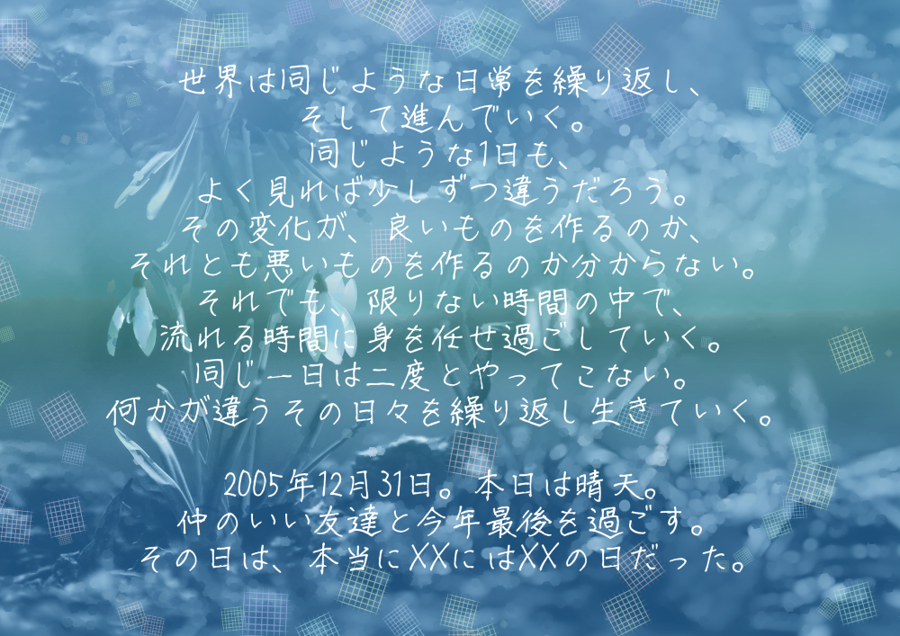
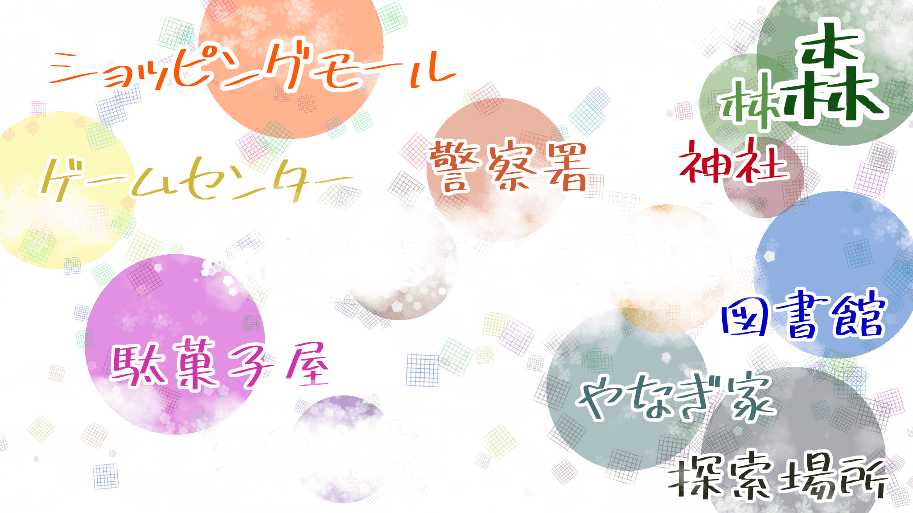

スノードロップはさかない
PL向け情報
概要
世界は同じような日常を繰り返し、そして進んでいく。
同じような1日も、よく見れば少しずつ違うだろう。
その変化が、良いものを作るのか、それとも悪いものを作るのか分からない。
それでも、限りない時間の中で、流れる時間に身を任せ過ごしていく。
同じ一日は二度とやってこない。何かが違うその日々を繰り返し生きていく。
2005年12月31日。本日は晴天。
仲のいい友達と今年最後を過ごす。その日は、本当にXXにはXXの日だった。
共通HO
あなたたちは、2005年12月31日に柳 陽(兄)と朔(弟)の双子と一緒に
年越しをする予定である。
※陽と朔は高校3年であるが、一緒に
大晦日過ごす予定であれば探索者の年齢や関係性は自由でよい。
柳 陽(やなぎ よう)
柳 朔の兄。18歳。
生真面目なところが多く、
天真爛漫な雰囲気を持つ朔とは対照的な印象がある。
いつの頃からか、朔に対し、過保護になり、
ブラコンな一面も有名。常に、朔と一緒に行動している。
柳 朔(やなぎ さく)
柳 陽の弟。18歳。
天真爛漫な雰囲気を持ち、生真面目な陽とは対照的な印象がある。
最近、不眠症気味らしい。
シナリオ開始時
2005年12月31日。
大晦日。日付の変わる年越しまで、一緒に過ごす予定である。
その他
大事なこと：高POW、ロール、折れない心、諦めない意思、低い出目を出す決意
準推奨技能：目星、図書館
探索者:3人推奨
目安時間 :15~20時間程度(ボイス)
以下、KP向け情報
↓

KP向け情報
KP概要
仲の良かったNPCは突然殺しあうし、世界は滅亡するし、最悪の1日を繰り返しているし、友達の殺人とめて、友達の神の召喚をとめて、怪しい宗教団体の神の召喚もとめて、世界の滅亡を阻止し、ループもとめるってやること多すぎ!!
SAN値も足りないし、MPも足りないし、時間も足りないし、ハッピーエンドはあるのかちくしょう!・・
ああ、 死ぬにはなんて最悪/最高の日だ。
始まりの真相
幼馴染の柳陽と朔は、ニョグダの落とし子だった。
半年前から始まった悪夢に、精神的に弱い朔は、徐々に壊れていっていた。
陽はそのことに気づき、謎の男に教えてもらった呪文を使い、朔をなんとか落ち着かせようする。
しかし、そのかいもなく、朔は2005年12月31日20時についに精神が壊れてしまう。
同日2005年12月31日。黒き闇の森と名乗る宗教団体がついに、儀式に必要なものをそろえ、
新月の日を迎える。晴天、月のない夜に星が輝く日。探索者が住む神社の奥の森で、
密かに進められたシュブニグラスの招来が行われてようとしていた。
同日2005年12月31日。
魔術や秘術、オカルトにのめりこんだ一人の男がいた。彼には恋人・・・彼女がいた。彼女もまたニョグダの落とし子であった。
彼女は、悪夢に覚えつつ暮らす日々を送っていたが、彼女の体はその日荒廃し始めたのであった。その姿を見た男は思う。
ああ、なんて美しいのだ。壊れる彼女。そのまま彼女は自分の変貌に耐え切れず、精神が崩壊し死を選んでしまう。
彼は思ったのだ。この姿を、この一瞬を、ずっと見たいと。そして、この美しい光景を見るのに準備が足りなかったと。
彼は叔父が残してくれた3枚のチケットを使い、時を戻ることにした。たった1日前に。
そして、31日を迎える準備をし、神に願いをした。2005年12月31日を永遠に繰り返してほしいと。
神はそれを笑って承諾した。なにせ世界がどうしようもなく終わる日だったからだ。
かくして、2005年12月31日。よく晴れた新月の日は、永遠に2006年を迎えることはなくなった。
繰り返す世界で、世界は徐々に変わっていった。過ぎ去った1度目の世界で、柳朔は壊れ、友人、家族を殺しアザトースを招来するはずだった。
宗教団体黒き闇の森は、シュブニグラスを招来するはずだった。その日、探索者が住む町は、どうしようもなく世界は終わるはずだった。
繰り返すことによって起きた変化。それは、1つは柳 陽と朔の殺し合いだった。
陽は、いつの間にか朔を殺すようになった。今はなくなった最初の世界。そこで、壊れて・・・助けを求める、殺してくれと頼む朔の姿を永遠に悪夢として見るようになったのだ。
脳裏から離れることなく、もう二度と朔が壊れてしまわないようにと、彼は朔を殺すようになる。
しかし、うまくいかないときもある。それは、些細なことがきっかけだった。
たまたま、朔が早く起きた。そんなとりとめのないことがきっかけで、朔は繰り返す12月31日を悪夢として自覚する。
自分を殺す、陽の姿を。最愛の兄に殺されること、友人が助けてくれないこと。何もかもが原因で、柳 朔は壊れ自らの意思で世界を終わらせる。
世界は終わる。
時には、宗教団体のシュブニグラスのせいで。
時には、柳 朔が呼んだアザトースのせいで。
時には、何も起きず、ただ過ぎ去り。
時には、・・・・柳 陽のせいで。
87回目を過ぎたころ。そろそろこの喜劇も、バリデーションがなくなってしまった。
嘲笑う神も、ありきたりな1日に飽きてしまったのだ。
さあ、88回目の2005年12月31日。
探索者たちは繰り返す世界の記憶を保持するようになった。
それは、飽きられたこの世界を刺激するスパイスとして。
世界は終わり、世界は繰り返す、最低で最悪な1日を。この1日、どう過ごしますか?
登場人物
※容姿の情報は性別や見た目の年齢くらいで書いていません。
回すKPさんの性癖の見た目を用意してください。
また、占い師、駄菓子屋、喫茶店のマスターはシナリオ上の行動をとってくれれば本当に自由のため、よく似た人ということでKPが持っている思い出深い探索者で代用したりしてもよい（たとえ、出てきてもよく似た人のため、実際の探索者とは異なるというものになる。そのため自己責任でロスト探索者などの活躍にも使ってよい）
※テストプレイでは、1陣の探索者たちが、2陣の占い師、駄菓子屋、喫茶店のマスターとして登場した。
柳 陽(やなぎ よう)
STR:12 CON:16 SIZ:13 INT:14 POW:17
DEX:10 HP:15 DB:1d4
現在SAN値：30
拳:50 回避:20 ※KPの出目が悪いと自覚がある場合は、回避値を上げてよい
ニョグタの落とし子。
自分自身も朔も、人間ではないなにかだと知っている。
赤い血ではなく、黒い液体が流れることから、朔に対して過保護である。
(人間だと思っている朔をそのままにしてあげたいという意思)
2005年12月31日、朔を殺す。
「お前はお前のままでいてほしい。せめて、朔は朔のままで、朔・・・大好きだよ」
※深淵の息 の呪文を使い殺そうとするがあまりに苦しそうで、最後にはナイフで刺し殺した。
ナイフ
刀身を清める呪文が作成された、自分自身も傷つけることができるナイフ。
万木 秋留(ゆるぎ あきる)からもらったものである。
その他覚えている呪文
・精神転移
・精神的従属
・ニョグダの招来
柳家構成
パパは、再婚相手
ママは、いつのまにか妊娠していた。
※このことは、陽と朔はしらない。
柳 朔(やなぎ さく)
STR:12 CON:14 SIZ:13 INT:10 POW:10
DEX:14 HP:14 DB:1d4
現在SAN値：20
拳:50 回避:28 ※KPの出目が悪いと自覚がある場合は、回避値を上げてよい
ニョグタの落とし子。
自身が人間ではないことを知らない。
陽には絶対的な信頼がある。そのため、陽に殺されるという事実を現実と認識することが、精神崩壊の一番のトリガー。
12月31に見た夢は過去の1～87回分31日の抜粋。朔が陽に殺されたり様々な内容を見ている。
陽に夢の内容を忘れるように呪文をかけられたが、陽は詳細な内容が分かっていないため、断片的にしか消せていない。
2005年12月31日、狂気に陥り、アザトースを招来させる。
MP+100魔力が付与されたペンダントを持っている。
※このペンダントは使う意思がない限り、使用できない。
このペンダントは、にゃるが面白がってあげたもの。
朔自身はいつの間にか持っていたもので、特に効力もなにもしらない。アザトース招来用。その他使用負荷
今はなくなった最初の世界の話
朔は壊れた末に、友達も家族もみんなみんな殺して、陽に助けを求めた。
久留間 祐樹(くるま ゆうき)
STR:10 CON:10 SIZ:11 INT:13 POW:18
DEX:10 HP:10 DB:0
拳:50 回避:25
2005年12月31日をループする原因を作った屑。
恋人が何度も、絶望に陥り、死ぬ姿を見たくてループをすることにした。
久留間 祐樹の文字を検索すると、叔父の久留間 忠久の名前と住所が出てくる。
※祐樹は忠久の家に住んでいる。
落とし子を捜すうちに出会った恋人については、彼は彼なりに愛してはいるが、その愛はとてもゆがんでいる。
探索者には理解できないやばいやつとしておくこと。※なるべく殺すが吉
久留間 忠久(くるま ただひさ)
オカルトや神話生物、宗教関連の著書を多く持ち、世界は人ならざる化け物によって破滅されると本気で信じていた学者。 カルトに関する本をおおく出している。
南雲 京介(なくも きょうすけ)
STR:16 CON:15 SIZ:15 INT:8 POW:14
DEX:16 HP:14 DB:1d4
拳:70 回避:60 頭突き:50 投擲:60
目星:25 聞き耳:25 図書館:25
追跡:50 操縦ヘリ:85
困った味方。POWは14と高いが、INT8くらいのあほなので、呪文は覚えられない。いわゆる脳筋のようで、なんでも力業でやろうとする。端的。
※朔のストーカーをしているところで探索者に見つかる。
※朔が世界を壊すことを朧げに覚えている。
元探索者で、何でも火で燃やし、元凶は殺すべきっていうシナリオブレイカー的な考えを持っている。
話をすれば、シュブニグラスの招来を止めてくれる。なんなら、久留間も二つ返事で殺してくれる。
※シュブニグラスの止め方は、森の祭壇を信者もろとも、爆弾で吹き飛ばす。
操縦(ヘリ)85%で、手製爆弾を投下する。
※止めるときに、KPはワクワクしながらダイスを振ってもいいがエンドに関わるため、おすすめはしない。自動成功でよい。
世界を守るために過激だが、それ以外は普通のおじさんであり、人にも優しい。
※これは、シナリオ上特に必要はないが、聞かれたので載せておきます。
・南雲さんと万木さんは元々同じ探索者で、もう一人友達がいた。
三人で探索者として世界を救った。その際に、２生還１ロストで、友達が死んだ。
→陽から聞ける、万木さんの大事なモノをなくしたは、その友達のこと
南雲さんの下記のセリフもそれにつながる
「昔、平和のために友が死んだ」
「・・・世界が持続するためなら、俺は友を50人殺す。 最初に死んだ友が残そうとした世界だ。なら、それを全うする。」
・万木さんは人間ではなくなったことに負い目を感じ、南雲から離れた。
→南雲は探索者の町に、万木さんを捜しに来ている。
（１２月３１日時点では、追いかけっこの最中で出会っていない）
彼があほなのに、ヘリができるのは、1度目の探索者になった時点でこれではダメだと思い単身外国に行き、傭兵生活をした際に身に着けた
回避やその他諸々もそう。言葉がつかえないのは、いつものこと。日本語もよくわからないので問題はない。
感覚で車とヘリを操縦する。
そこで、悪は殺すべきという考えが強くなり、爆弾作りも教わっている
誕生日忘れたので自分が何歳か覚えてないです。
彼が落とし子に攻撃ができる・・・それってつまり彼もまた、
万木 秋留(ゆるぎ あきる)
毎日陽のもとにやってきて、ほんの少しの未来を教えてくれる。
その未来は、柳 朔の精神が壊れるか否かである。
彼は、昔、探索者で、いろいろなことを体験し、また、いろいろなことを知ったモノ。かつては人間だったが、今は人間か自分自身わかっていない。
南雲とは、実は同じ探索者として、過ごしたことがある。なので、気まずいところもある。シナリオ中は謎の男として終わる。
些細なきっかけで、柳陽と朔がニョグダの落とし子であることを知る。
精神状態からして、朔のほうが危ないため、陽に己が人間ではないこと、双子の片割れもそうであること。
なにかあったときのためのナイフと、彼にいくつかの呪文を教える。
記憶を曇らせる呪文を陽に教えた。
ニョグタの落とし子
黒い液体を見たと気づいた場合は、SANCHK 0/1d3
人間の姿でも、貫通可能な武器は無効。
すべての攻撃は、最小限の数字しか受けない。 火、酸、放射線、電気も無効となる。
占いや
KPのお遊び用NPCその１。好きにロールしていい。ヒント要因
軍人でも、おかまでも、男でも、女でも、幼女でも、少年でも、青年でも、帰国子女でも、
セクシーなお姉さんでも、ホストでも、老婆、初老の男性でも、好きなきゃらでどうぞ。
※天という遥か彼方KPからのありがたあああああい助言をしてくれる。
(人間の言葉をしゃべるゴリラや犬や猫でもいいが、世界観を壊す可能性があるので状況によって判断すること)
KPが占いファンブルしたときは責任持てません。
駄菓子屋
KPのお遊び用NPCその２。駄菓子屋だ。好きにロールしていい。
ただし、人間にすること。2005年の話や噂話するひとなので、話好きのほうがよい（話すきっかけがあれば自由）
喫茶店マスター
KPのお遊び用NPCその３。好きにロールしていい。ヒント要因その２
軍人でも、おかまでも、男でも、女でも、幼女でも、少年でも、青年でも、帰国子女でも、
セクシーなお姉さんでも、ホストでも、老婆、初老の男性でも、好きなきゃらでどうぞ。
※この喫茶店のNPCは、人間でもなくてもいい。その場合、状況によってSANCHKすること。
使用想定呪文
対象の肺を海水で満たす。 対象の姿が見えていないといけない。 心の中で呪文を唱え、8MPと1d6正気度のコストを支払う。 対象は窒息ロール、CON×5、CON×4・・・ 失敗のたびにHP―1d8
記憶を曇らせる呪文
ある特定の出来事を意識的に覚えられなくする。
MP:1d6、正気度:1d2 効果は即時
(MP対抗ロールが必要。)
※陽は朔に対し、毎朝この呪文を嫌なことが忘れられるお呪いとしてかけている。
ルルブ:P255
精神的従属
MP8 正気度1d8、3ラウンド
対象を肉眼で取れる限り、どんなことでも実行する。
(MP対抗ロールが必要)
※このシナリオ上では、陽から朔は自動成功
※この力を使い、endによっては陽は無理やり朔を精神転移させてようとする。
精神転移
対象と永久的に肉体を交換する呪文。
コスト、術者;MP10 正気度1d10、犠牲者1d20
犠牲者と術者のMP対応が発生する。
※このシナリオナ内での人形に対するMP対抗は、自動成功とする。
アザトースの退散
アザトースのPOW5につき、1MPを割り当て退散の道を開く。(成功率5%)
→アザトースのPOW100なので、20MPで5%の確率。
さらに、MPを1払うごとに、5%上昇。
※100%の退散には、39MP必要。
アザトース
STR 該当なし CON:300 SIZ:さまざま INT:0 POW:100 HP:300
正気度 1d20/1d100
シュブニグラス招来
清めた石の祭壇へシュブニグラスを呼び寄せる。
祭壇は暗い森の中で、呪文は新月の日祭壇で行う。
チケット処理
・自動ループ１回につき、１日、半日チケットは、それぞれ１枚のみである
→探索者はチケットを使って、無限ループできない。
・１２月３０日に戻った際、チケットの制約で３０日の間に再びチケットを使うことはできない。
また、１２月３１日でも１日、半日チケットはもらえないので注意、この2枚は自動ループ1回につき1枚ずつと覚えてた頂ければ・・・・
時間チケット
１日、半日、１２チケットのこと
人形チケット
人形チケットのこと
チケット使用時について
チケットを使った探索者以外は、記憶が上書きされる
※チケットの裏に名前が書かれている場合は、記憶は上書きされない
チケット内の注意書きについて
もしも、一緒に戻りたい人がいたら2人まで一緒に戻れるよ。
→合計３人戻れます（探索者が４人の場合は、３人までに変更し、探索者全員が戻れるようにしてください）
※運命共同体!みんなで代償を払いましょう!
→MPだけ分担して払うことができます
SANは使用者のみが支払います。
12月30日の戻り方
1日チケット→１２チケット→半日チケットの順に使う
１２月３０日昼に戻れます
MPの消費について
チケット使用して、時が戻ってもMPは回復はしない
※睡眠や時間の経過にしないと回復できない
チケットを使った描写について
使ったらすぐに時が戻るので、探索者によって状況が違うため記載しない
好きに描写してください。
１日チケット/半日チケットだけを使う
１２月３１日をやり直すことになります
→使わなかった時間チケット（1日、半日、１２チケット）は手元にある
人形チケットは手元にはない
ループについて
結果てきに自動的に強制ループになります。
※1日、半日をつかっても３０日には戻れず、ループは止められていないため
３１日の２４時を過ぎるか、神をよぶかで自動ループにしてください。
喫茶店
→チケットはもらえません
※その日の分のチケットは、探索者がもっているからです
チケットを再びもらって、３１日をやり直すことはできません
１２チケットを買っていた場合
買った分だけ在庫がなくなっている
人形チケット
売っていてもいい
※マスターはあげたチケットが手元に戻っていることが分かるので、
喫茶店にきてもあげることはありません。
時間が戻ったことによるできることの一例
南雲さんを早く起こす
→南雲さんの家に目覚ましを大量におく等、自発的に起きるようにすれば
発狂した南雲さんには会わなくていい
起床時間を変更する
起きる時間のリセットができる
夜更かしして、遅くなった場合自動ループで起きる時間が遅くなる
※早く起きた場合は、自動ループの起床が早くなる
深夜に森に行く
信者たちが探索者見つけて殺してもいい
全員死んだら自動ループ
生き残りがいる場合は、このループの間
幽霊システムまたは通りすがりのNPCをやってもよい
30日に戻ったときの影響
Clocklock
・そのまま、３１日を迎えるとその回の自動ループでは、
探索者が時間チケットを所持したので、もらえなくなる。
１２チケットと人形チケットだけが買える
南雲
・３０日の出来事は上書きされる
→酒を飲むの止めたら、彼は３１日は家に鍵をかけるし、普通に寝て発狂しておきます。
・３１日は、相変わらず断片的な終わった世界の記憶を持っています。
久留間
・３０日殺された場合は、３１日いません
・３０日であって見逃した場合、３１日に探索者にであったら彼はすぐさま逃げるだろう
シナリオ記載
見出し見出し
イベントや、探索場所の見出しとして使用しています
行動や技能
行動や技能の成功によって、得られる場合は目星のように記載しています。
本文
導入
世界は同じような日常を繰り返し、そして進んでいく。
同じような1日も、よく見れば少しずつ違うだろう。
その変化が、良いものを作るのか、それとも悪いものを作るのか分からない。
それでも、限りない時間の中で、流れる時間に身を任せ過ごしていく。
同じ一日は二度とやってこない。何かが違うその日々を繰り返し生きていく。
2005年12月31日。本日は晴天。
仲のいい友達と今年最後を過ごす。その日は、本当にXXにはXXの日だった・・・・・・
本日は2005年12月31日。晴天。あなたたちは、仲の良い友達の柳 陽と朔とともに、
午後14時ごろに集合し、そのまま年が明けるまで大晦日を楽しむ予定である。
なぜ、午後14時かといえば、最近の朔は不眠症で、休日はお昼すぎまで寝ているため、この時間での集合となった。
朝目が覚めると、嫌な夢を見ていたのか、気分がすぐれない。
真冬だというのに、冷や汗をかいているようだ。しかし、内容は思い出そうとしても思い出すことはできない。
それぞれ思い思い集合時間まで過ごすだろう。
KP確認事項:探索者全員の起床時間を確認する。
一番早い人に合わせ、次回の自動ループを開始すること
※起床時間は、基本的に自らの意思で変更できないが、他の探索者に起こされることは可能で、
また、1日チケットを使って起床時間を変更（30日に行く or 24時に起きて、目覚ましをかけなおす）等すれば、起きる時間を変更することができる。
ただし、1日チケットのみを仕様した場合に、
真夜中24時からずっと動きますという宣言は、探索者が夜通し起きているものとして、マイナス補正をかけること。
朝の情報
任意で、探索者1人の朝のロール等をしてください。 ループ自覚後に朝の情報は拾えるため、飛ばしても構いません。
テレビを見る
今日は1日晴天。12月31日。大晦日。よくある大晦日の特集がやっている。
幸運
最近の未解決失踪事件について流れる。ここ数週間で、この近くで未解決失踪事件が起きているとのこと。
被害者の年齢等はさまざまで一貫性はなく、まだ犯人の目星はついていない。現在までに17人の失踪者がでている。
KP情報:失踪者はシュブニグラスを招来するために祭壇を清めるための生贄として誘拐された人間たち。
14時の集合
待ち合わせ場所に行けば、柳陽と朔がいた。
朔「おはよ!」
陽「おはよう」
朔は笑顔で、陽は少し気だるげに挨拶を返す。
「あのね!19時から神社で甘酒配るんだって!僕、飲みたいな!」
「ほかにも、大晦日の出店も本格的にでるんだって!夕飯ここで買おうよ!」
朔はにこにこと提案をする。

主な探索個所：【ショッピングモール／ゲームセンター／警察署／図書館／駄菓子屋／神社】
※行きたい場所があれば、行ってもいい
1日目はたくさん遊び、消えてしまう楽しい思い出を作ること。
なるべく、ループ時にこの思い出は消えてしまったのかという悲しい気持ちにさせるとよい。
※追加探索個所
【喫茶店】※謎の男を追うことでたどり着く or 占いやのテーブルにある名刺を見る
【南雲の家】※南雲の免許証を拾う
【久留間の家】※久留間という名前でネット検索
イベント1:不穏な予告
1日目 1か所探索前に発生。
2005年12月31日 14時ごろ。
さあ、行こうと歩き出したときに、一人の男性が近づいてくる。
聞き耳
「20時。壊れる」
すれ違い様、男性はそうつぶやくのが聞こえる。
目星
その男性が、すれ違い様、陽になにかを囁いていたのがわかる、また、陽の顔の色が悪くなっているのがわかる。
アイディア
どこか見覚えがあるかもしれない
この見覚えは、男・・・万木 秋留をどこかの放課後や道で見たことがあるかもしれないという既視感。
記憶のない12月31日ではなく、12月30日以前でどこかで見たことがあるかもしれないというところで出す。
（陽のもとに毎日やってくるので、友達なら1度や2度見たことがあるはず）ループ後にアイディアがないのはそのせい
※もしも、繰り返しの31日で身に覚えが？となるかもしれないが、このシナリオ上その場合はアイディアをカップルや南雲にフルのが平等にあるはずが、ないというのも一応ヒントと言えばヒント
陽に声をかける
「・・・なんだったんだろうな。新しいナンパかな?」
陽にしては、笑えない冗談のようなことをいった。
KP情報：声に振り返った陽の顔色は元に戻っている。
初日に男を追うことはしない想定。
もし、無理やりでも行こうとするなら、Loop後の処理を行ってもよい。
男を追う場合→
イベント2:うたたね
どこか休憩中に朔を見た場合のみ
※どこかでの休憩・・食事の前や、ベンチに座る等、 電車での移動などそのような休むような動作をし、探索者と朔と朔が少し離れていた場合のみ発生（ここは、KPが覚えていたらでよい）
目星
朔がうたたねをしそうになったのを、陽が起こしている姿があった。
イベント3:仲睦まじい恋人たち
1日目 2つめの探索中。
※このカップルの男性はこのループの元凶であり、毎回の記憶があるため、 いつも同じ場所にいるわけではない。色んなところで、変貌する彼女を嘲笑っている。
あなたたちに、一組の恋人たちに目が入る。
なかなかのべたつきで、時が時なら密と言われていたかもしれない。
「こんなに可愛い今日の君を何度も出会えるなんて本当に幸せだよ」
「なにそれ、何度もって可笑しな言い方ね」
「僕だけが知っていればいいんだ」
「変な人ね」
「君はこのあともっと美しくなるんだよ」
「なに?今日はとても機嫌がいいのね」
「ああ、そうだよ。ほらっ」
彼が何かを彼女に見せると彼女は悲鳴を上げて手で顔を覆った。
すすり泣く声の彼女を彼が抱きしめる。
目星
抱きしめる男性が、嗤笑(ししょう)していることがわかる。
聞き耳
「本当に何度も見ても君は素敵だね」
と笑う声がする。
また、小さな金属がおちる音がする。
しばらくするとその恋人たちは、どこかへ歩き立ち去った。
目星 or 幸運 (聞き耳成功で＋20補正
キーケースが落ちていることが分かる。
キーケース
中には、3本の鍵がある。 １つは、車の鍵で、１つは家の鍵のようで、残りの１つは、小さな鍵だ。
すでに立ち去った後なので、追いかけて渡すことはできない。久留間が彼女に見せたのは鏡で、彼女は自分の顔が変わってきていることに泣いた
イベント４:ストーカー??
1日目 2つ目の場所終了時
なにか違和感があるのに気づく。
目星
視線の先を探ると、一人の男性がこちらを見ていることが分かる。
「やっと見つけた。やっと」
一人の男性が叫びながら向かってくるのがわかる。異様な様子に、無意識に後ずさるかもしれない。
「・・・二人?まあ、いい。君たちがどんな存在で、君たちがどんな事情があるか知らない!でも、もうたくさんだ!!」
そういうと彼は、朔と陽めがけて襲い掛かってくる。
戦闘
男=南雲恭介ステータス
STR:16 CON:15 SIZ:15 INT:8 POW:14
DEX:16 HP:14 DB:1d4
拳:70 頭突き:50 投擲:60 回避:60
※柳 陽と朔に聞いても知らない人と答える。
2ターンすれば、周りの大人の協力もあり、襲ってきた男性は取り押さえられた。
「くそっ!離せ!!!離せよ!!」
「こいつらを殺さないと!殺さないといけないんだ!!お前らがいるせいで!!明日が来ない!!」
目星
財布が落ちているのが分かる。
開けば、南雲 京介と書かれた免許証が入っている。
住所はこの近くのようだった。
突然に理不尽な目にあった、あなたたちだったが、警察署に行き、軽い事情聴取を受けることだろう。
怪我をしていれば、医務室で手当をしてくれる。（固定1d3回復）
事情聴取では、男・・・南雲恭介について知り合いか、
どこかで会ったことがあるかなど聞かれたが、朔も陽も知らないようだった。
終わると、担当の警察が声をかけてくれる。
「怖い目にあったね。すっかり暗くなってしまったようだ。引き留めてすまないね。
・・・まったく、なにかわかれば後日連絡をするよ。」
男の様子を聞く
「・・・世界が滅亡するとか、支離滅裂でね、明らか様子もおかしいし、財布もなくてね、
どこかの精神科病棟から抜け出したのかもしれないな。」
警察署をでるとすっかり辺りは暗くなっていた。
空をみあげれば、月はなく、星はいっそう輝く。
朔「なんだったろうね」
陽「・・・・さあな」
朔「あ!もう、時間だ!ねえ、一回、神社行って厄払いも込めて甘酒のもう!」
了承を得るような感じであれば、神社行ってください。
朔の提案で神社に行くことにする。
もし、家に帰るにしても、
通り道あることから先ほどまで理不尽な目にあった朔の要望を無碍にすることはできず、
神社によることになるだろう。
神社→
もし、行かない雰囲気であれば以下を描写
神社に行かない描写
柳陽と朔と別れ、雲一つなく月のない夜を帰った。
帰宅してしばらくすると異変に気づく。何かがおかしい。窓の外を見てみれば、そこに何かがいた。
泡立ち爛れた雲のような肉塊だった。粘液を滴らし、巨大な口を空け、
のたうつ漆黒の触手であたりを地獄へと変えていく。闇より深いその黒い蹄を持つ足が、地を揺らした。
SANCHK 1d20/1d100
慣れの適応のため、探索者のシュブニグラスによるSAN減少値管理をすること。
また、SAN値は0以下の場合も、マイナスとして計算する
（繰り返し開始時にSAN回復があるので、マイナスの値から計算）
形容しがたき神を目の前に、あなたたちはなすすべもなかった。
逃げまどうもの。狂気に陥るもの。ただ立ち尽くすもの。なにもかもが理解できないまま。
2005年12月31日、2006年は来ることはなく、世界は終焉を迎えた。
世界ループ自覚開始へ
神社
出店の準備がされているようだ。神社の裏には林が広がり、その奥はさらに森がある。
出店
焼き鳥、水あめ、ワタアメ、焼きそば、じゃがバター、おでん、たこ焼き、
お好み焼き、クレープ、カキ氷、チョコバナナ、カステラ、唐揚げ様々なものがある。
作者は甘酒くらしかしらないのですが、世の中にはきっとあると信じて食べたいものと縁日だしてます
もろもろ遊んだ後
時刻は19時半ごろ。目まぐるしい1日に、ほっと一息したあと陽は重々しく口を開いた。
陽「今日は、ここで解散にしないか?」
朔「どうして?怖いことあったけど、だからこそ楽しい思い出作りたんだけど?
今日はみんなで年越しをする予定だったし?」
陽「・・・・・悪い」
朔「悪いって?なんで謝るの?よくわからないよ。大丈夫?」
陽「・・・朔。本当にごめん。みんなも。少し、朔と二人っきりにしてくれないか?朔に、話があるんだ」
陽に心理学
失敗：明らかに陽の様子がおかしいことが分かる。
成功：何かを決意したかのように見える。
もしも、ついていきたいというならば、陽は二人っきりにしてほしいと探索者を説得するが、
あまりに、引き下がらない場合は、陽が朔の手をとって、林に駆け込む。突然のことで探索者たちは、
見失ってしまうだろう。
宣言があれば、後をついていくことができる。
もしも、見失ったあとに探す宣言があれば、見つかる。
ついていった描写/探した描写
（ ついていかない場合）
薄暗い茂みの中を陽と朔がいるのがわかる。
人気がないその場所で、異様な雰囲気が漂っていた。
あなたたちはその異様さに少し立ち止まってしまうだろう。
向かいあう二人に、陽が朔の顔を両手で包み、まるで幼子をあやすかのような笑みを浮かべる。
「大好きだよ。朔。大好きだ。もっと一緒にいたかった」
「陽?」
朔が不思議そうに呟いたかと思うと、急に苦しみだす。口をぱくぱくとさせ、
水面に息を吸いに来た魚のように。片手で自身の胸をつかみ、
まるで、水の中にいるかのように苦しんでいる。空いている片方の手は、陽にすがるように伸ばす。
陽はその手をとって、見つめ、抱きしめた。
「ごめん、本当にごめん、こうするしか、こうするしか、なかったんだ。
今、楽にするから。朔が朔であるうちに、せめて、朔のままで、せめて」
朔は、目を見開き、陽を見つめる。
やがて朔の口から、液体がこぼれだし、その場に崩れた。
「大好きだよ。朔。守れなくて、ごめんな」
何が起きたかわからなかった。
思わず、後ずさりをしてしまうかもしれない。二人に駆け寄ろうとするかもしれない。
その動きで、陽は気づき、あなたたちへと振り向く。
その手には、なにかの液体で汚れたナイフを持ち、涙を流し、崩れ落ちる朔を抱きかかえる陽がいた。
SANCHK 1/1d6
あなたたちがこの状況を理解できないまま、さらに奇禍(きか)に見舞われることだろう。
雲一つなく月のない夜。星影によって照らされた神社の林の奥の森に、神は示現(じげん)した。
それは、泡立ち爛(ただ)れた雲のような肉塊だった。粘液を滴(したた)らし、
巨大な口を空け、のたうつ漆黒の触手であたりを地獄へと変えていく。
闇より深いその黒い蹄(ひずめ)を持つ足が、地を揺らした。
SANCHK 1d20/1d100
慣れの適応のため、探索者のシュブニグラスによるSAN減少値管理をすること。
また、SAN値は0以下の場合も、マイナスとして計算する
（繰り返し開始時にSAN回復があるので、マイナスの値から計算）
形容しがたき神を目の前に、あなたたちはなすすべもなかった。
逃げまどうもの。狂気に陥るもの。ただ立ち尽くすもの。なにもかもが理解できないまま。
2005年12月31日、2006年は来ることはなく、世界は終焉を迎えた。
聞き耳
「そろそろ飽きたな・・・」
と呟く声が聞こえた。
この聞き耳は自覚のない初回のループ前だけ
世界ループ自覚開始へ
ついていかない描写/探さない描写
柳陽と朔と別れ、雲一つなく月のない夜を歩く。
しばらくすると異変に気づく。星影によって照らされた神社の林の奥の森に、神は示現した。
それは、泡立ち爛れた雲のような肉塊だった。粘液を滴らし、巨大な口を空け、
のたうつ漆黒の触手であたりを地獄へと変えていく。闇より深いその黒い蹄を持つ足が、地を揺らした。
SANCHK 1d20/1d100
慣れの適応のため、探索者のシュブニグラスによるSAN減少値管理をすること。
また、SAN値は0以下の場合も、マイナスとして計算する
（繰り返し開始時にSAN回復があるので、マイナスの値から計算）
形容しがたき神を目の前に、あなたたちはなすすべもなかった。
逃げまどうもの。狂気に陥るもの。ただ立ち尽くすもの。なにもかもが理解できないまま。
2005年12月31日、2006年は来ることはなく、世界は終焉を迎えた。
聞き耳
「そろそろ飽きたな・・・」
と呟く声が聞こえた。
この聞き耳は自覚のない初回のループ前だけ
世界ループ自覚開始へ
本編:Loop自覚開始
Loop時の処理について柳陽と朔は、記憶がない状態である。
ただし、朔は記憶を曇らせる呪文を陽にかけられていない場合に時間を追うごとに 繰り返した記憶をうたた寝していくうちに朧に思い出していき、世界を滅亡させる。 (陽はあまり朔が寝ないように、見張っているが、陽がいないと朔はすきをみて寝てしまうため)
注意:
自動Loop = 31日20時に神が召喚され戻るか、召喚は止めたがループをとめておらず31日24時をすぎること。
チケットでのLoop = 1日チケットをつかったやり直し
どちらの場合でも、基本的に持ち物は戻った時間の持ち物でリセットされる。
→探索で書籍を拾ったが、戻ると持っていない。
→ただし、記憶はあるので、覚えた呪文は使えるものとする。
→南雲さんの免許証を一度でも見て住所が分かれば、免許証がなくても覚えているものとして行くことが可能。
【例外】
時間チケット（1日チケット、半日チケット、12チケットは）は、チケットを使用したループでは所持ができる
→1日チケットで12月31日00時00分1秒に戻った場合、手元には半日チケット、12チケットはある。（人形チケットは持っていない）
自動ループ時上記の例外は、発動しないため、すべての所持品はリセットされる。
自動ループ時の描写
・・・体が跳ね起きるとはこのことを言うのだろう。
身体が震える。心臓は驚くほど早く早く鐘を打つ。
今いる場所を確認すれば、そこは自室のベッド(布団)の上だった。
なにがおきた。あれはなんだ。駆け巡る記憶に鼓動は鳴りやまない。
胃がひっくりかったかのような感覚に、思わず吐き気がこみあげる。
涙は流れ、口からは嗚咽が漏れる。
あれがもし現実に起きたことならば、なんて最悪な1日なのだろうか。
今自分が生きている。そのことだけが、あの出来事を、記憶の出来事を否定できた。
日付を見れば、本日は2005年12月31日。晴天。 今日は14時から柳 陽と朔と遊ぶ予定である。
正気度:1d30回復+10 (初期SAN値以上にはならない)
※もし、SAN値が0以下の場合は、最低値として40から開始
※自動Loop自覚してから2回目
・・・体が跳ね起きた。
今いる場所を確認すれば、そこは自室のベッド(布団)の上だった。 身体が震える。心臓は鐘を打つ。駆け巡る記憶に鼓動は鳴りやまない。 再び過ごした最悪な日。時刻を確認すれば12月31日だった。 確信する、12月31日に死んでまた1日を繰り返していることを。 いつからだろうか。いつから繰り返しているのだろうか。なぜ、いま気づけるようになったのか。 胃がひっくりかったかのような感覚に、思わず吐き気がこみあげる。 まだ死んでいない。まだ死んでない。まだ・・・
再び、2005年12月31日が始まる。本日は晴天、 今日は14時から柳 陽と朔と遊ぶ予定である。
正気度:1d20回復+10 (初期SAN値以上にはならない)
※もし、SAN値が0以下の場合は、最低値として30から開始
※自動Loop自覚してから3回目
また、戻った。今いるのは、自室のベッド(布団)の上だった。 戻ったことに安堵をすべきなのか、それとも続くことに悲嘆すればいいのか 世界が終わる日がまた始まったのだ。また始めてしまった。 まだ生きている、また生きている。また・・・繰り返している。
2005年12月31日が始まる。
本日は晴天、今日は14時から柳 陽と朔と遊ぶ予定である。
正気度:1d10回復+5 (初期SAN値以上にはならない)
※もし、SAN値が0以下の場合は、最低値として20から開始
※自動Loop自覚してから4回目
今いるのは、自室のベッド(布団)の上だった。
戻ったことに安堵をすべきなのか、 それともまた続けてしまったことに悲嘆すればいいのか止められなかった1日がまた始まったのだ。 1日は繰り返す。また死んで、また生きている。また・・・12月31日を繰り返す。 これもいつまで続けられるかわからない。もう二度と、繰り返してはいけない。 これが最後にしたいと、できる限りのことはしなくては、そう感じた。もう、続けたくない。
2005年12月31日が始まる。 本日は晴天、今日は14時から柳 陽と朔と遊ぶ予定である。
正気度:1d5回復+5 (初期SAN値以上にはならない)
※もし、SAN値が0以下の場合は、最低値として10から開始
※1日、半日チケットがあるため、自動ループの回復は4回目までです。 5回目以降はSANがマイナスされます。
5回目以降の自動ループによって、0以下が出た場合は心が耐え切れず、SAN0としてロスト。
SAN0の場合、クリティカルチケットによる恩恵か、幽霊探索者かを選択することも可能。
KP,PLが同意する場合のみ、記憶のないNPCとして一緒に探索してもよい。その場合技能値はすべて初期値。 POWなのどのステータスは振りなおしなしで決めて登場する※
クリティカルチケットでの SAN値回復は、1d3+3 として、KP,PL、PCの全員の同意をもって可能とします。 その場合、SAN0として扱い、1d3+3のSAN値で最後の探索を楽しんでください。※枚数分の回復可能
SAN0の探索者は生きている探索者がいれば幽体として応援も可能です。
※幽体離脱して一緒に探索をする。肉体はベットで動かない。
幽霊を見ることができる探索者がいなければ、幽霊探索者が生きている探索者になにか伝えたい場合は、 幽霊探索者は幸運、生きている探索者は聞き耳やオカルトを振って判定する。 また、ポルターガイストを起こして、血文字で伝える等コミュニケーションをとって下さい。
幽霊であっても呪文を唱える際に、MPを呪文唱える生きている人間にに与えることはできるものとします
(幽霊は呪文を唱えるものにはなりません、またチケットは扱えません)
(幸運と聞き耳、オカルトは、なにか他の相応しいと思われる技能でも可)
全員がSAN0または、誰かロストした時点で断念する場合は、エンドに進んでください。
※自動Loop自覚してから5回目
今いるのは、自室のベッド(布団)の上だった。
戻った。戻れたの・・・か。もう繰り返したくない。そう思ってしまった。 過ごした日々は本当に意味があったのだろうか。また・・・12月31日を始めてしまった。 もう続けたくない。気分がすぐれない。最後は来るのだろうか。希望などあるのだろうか。 本当に2006年がきて、幸せなどあるのだろうか。みんなで幸せにあることはできるのだろうか。 何度も繰り返す日々に、同じことを繰り返す事に疲れてしまった。記憶のないころに戻りたい。 あの何も知らず過ごした・・・楽しかったあの日に、戻りたい。
2005年12月31日が始まった。 本日は晴天、今日は14時から柳 陽と朔と遊ぶ予定である。
正気度:―1d20
※もし、SAN値が0以下の最低値はない
5回目以降、―1d20ずつ増えていく※6回目は－1d40
※自動Loop自覚してから6回目
目が覚める。今いるのは、自室のベッド(布団)の上だった。
ぞわりと嫌な予感がした。そして、頭の中で記憶にない恐怖が襲ってくる。 知らない、覚えていない出来事が、戦慄のように流れた。 化け物が、赤い血が、狂気に渦巻くあの光景が・・・ああ、途方もない息苦しさを感じる。 水面に息を吸いに来た魚のように、必死に酸素を取り込もうとしてしまう きっと、いままで何度もあの化け物を見ていたのだろう。一瞬のことで恐怖だけが残った。 本当に、自分たちは陽と朔を助けることができるのだろうか。 みんなで2006年を迎えることができるのだろうか。何を諦める必要が・・・あるのだろうか。 自分たちだけが、このループを止めることができるのに、いまだ止めることができない。
2005年12月31日。 本日は晴天、今日は14時から柳 陽と朔と遊ぶ予定である。
正気度:―1d40
※もし、SAN値が0以下の最低値はない
※自動Loop自覚してから7回目
暗く、澱み中にいるようだった。体が動かない。
叫び声が聞こえる。笑い声が聞こえる。泣き声が聞こえる。
いったいこの声は誰の声だったのだろうか。どこか聞いたことのあるような声だった。
これは知らない過去。これは知らない・・・１２月３１日。液体に溺れる。
もしも、繰り返す事がなかったら、自分たちはどうなっていたのだろう。
この世界はどうなっていたのだろう。終わる世界が、終わらなかったのは・・・・
本来、終わるはずだった世界。逃れられない恐怖が・・・幾度もなく訪れたであろう死を感じた。
正気度:―1d60
（耐えた場合のみ）
そっと、息を吐く。今いるのは、自室のベッド(布団)の上だった。
2005年12月31日。 本日は晴天、今日は14時から柳 陽と朔と遊ぶ予定である。
※もし、SAN値が0以下の最低値はない
自動Loop後の共通
朔と陽の行動について、基本は探索者の行動によって変わる。
朝の情報
テレビを見る
今日は1日晴天。12月31日。大晦日。よくある大晦日の特集がやっている。
幸運
最近の未解決失踪事件について流れる。ここ数週間で、 この近くで未解決失踪事件が起きているとのこと。被害者の年齢等はさまざまで一貫性はなく、 まだ犯人の目星はついていない。現在までに17人の失踪者がでている。
KP情報:失踪者はシュブニグラスを招来するために祭壇を清めるための生贄として誘拐された人間たち。
探索ルール
※ 探索個所には、移動を含めて各箇所2～３時間くらいかかる、
午前中から起きているのであれば、1日３～４か所回れる。
もしも、午後から起きている場合は、1日２～３か所とする。
探索個所：【ショッピングモール／ゲームセンター／駄菓子屋／警察署／図書館／神社／神社の林／神社の奥の森／柳の家】
※追加探索個所
【喫茶店】※謎の男を追うことでたどり着く or 占いやのテーブルにある名刺を見る
【南雲の家】※南雲の免許証を拾う
【久留間の家】※久留間という名前でネット検索
予測行動1:朔と陽を離す
陽に朔を殺させないために、
陽と朔を引き離す。朔だけを連れ出す
※陽は朔から離れようとしないので、陽に連絡して朔から離すのは難しい。
→携帯に連絡を残して朔だけを呼び出せる。
→家に突撃して、朔だけを攫う
(朔にあって陽に内緒でしたいことがある等説得し連れ出す)
連れ出された朔は、あなたたちと共に行動する。
陽は朔を捜しまわる。当然、探索者の携帯にも朔がいないことを連絡するだろう。
探索者が場所を教えてない限り、陽は朔と出会えない。
予測行動2:陽に話を聴く
陽に何故、朔を殺すのか聞く。
※朔がその場にいるか、いないかは重要のため、聞く時には朔がいるところで聞くか、聞かないかを明確にKPがPLにきくこと。
朔が陽との会話を声が届かない場所や配慮（耳をふさぐ、少し離れて待っているよういう等）をすれば問題なし
陽の口からは、朔を殺すとは言わないようにしてください。あくまで、死は救済ということを思い陽は辛うじて正気を保っているように装っているため
なぜ、朔を殺す?（殺したいと思っているか？）
※14時前に質問した場合
「・・・・何を言ってるんだ?俺が?朔を?たった一人の兄弟なのに?」
少し怒ったように、陽は言う。
※14時後に質問した場合
「・・・・何を言ってるんだ?俺が?朔を?たった一人の兄弟なのに?」
少し悲し気に、陽は言う。
朔と離れている場合
陽はしきりに朔のところに行こうとする。
朔と一緒に入る場合
あなたたちの前から朔の手をとって逃げ姿を消す
→陽は時間になったら、朔を殺す。殺すのは林でなくても大丈夫のため、
陽が朔と逃げた場合は、探索者のあずかり知らぬところで朔は死ぬ。
もしも、
世界のループも止めていた場合は、陽が朔を殺すエンドへと行くため、
陽に話しかけるときは、必ずKPから朔がいるが話すのかと確認すること
※状況によっては、KPの判断で説得やロール等で陽を留まらせてもよい
（急に弟の前でおまえ、弟殺したよ（殺すよ）って話したら、普通に怒って立ち去ると思うので、非推奨）
朔がそばにいない場合に下記の事項を説明する
※KP判断で陽が自分自身のことを打ち明ける。陽に心理学や朔を殺した等話た場合、交渉技能での対応してよい
※必要とあらば、交渉技能を振ること
・世界がループしていること
・陽が朔を殺したところをみたこと
・朔が陽を殺すこと。神を召喚すること
もしも、探索者が信じないかもしれないけど・・・等
言えば、陽は、あなたたちを信じるというだろう。
「・・・・信じるよ。だって、冗談でもそんなこと言わないだろ」
「あのな。もう、みんなは、この世界には、不思議なことがあるってもう知ってしまったから、
言うけれど。朔と俺は、人間じゃないんだ。何かわからない。でも、人間じゃない」
「もう、ずっと限界だったんだ。朔も・・・」
※朔も と言ったのは、陽自身も限界のため
陽も精神転移をせずに世界終了すると、彼は1月5日に朔が数日無事であることを確認して死ぬ。
探索者が陽について、陽は大丈夫なのか？と聞いても陽は大丈夫と笑うだけだろう。
自分が死のうとしていることはKPも陽も開示してはいけない
「よくわからない夢をみて、知りも知らないことを知っていく」
「自分が自分じゃあなくなる感覚がある」
「ずっと、朔には、そのままでいてほしかった」
「朔は・・・・・」
「ずっと、ずっと、朔が壊れてしまわないように、記憶をあいまいにしていたんだ」
「こんなことずっと続かないってわかっていたのに」
「朔が朔でなくなるなら、朔が大切なものをわからなくなるくらいなら、
朔が大事なものを自分で壊してしまうくらい壊れてしまうなら、
いっそ・・・俺がこの手で終わらせようと・・・そっか。そうか。朔、ごめんな」
陽は涙を流す。張り詰めた糸が切れるように、その場にしゃがみこむ。
「・・・朔には、人間じゃないこと、壊れてしまうこと、なにもなにもいわないでくれ。」
※陽は、世界がループしている事実を知った場合、
何度も朔を殺してしまっていることを自覚し罪悪感で、押しつぶされそうになる。
あの男の人は?
「彼が何者かもよくわからないんだ。俺と朔とにたようなものらしい」
「彼も大事なモノなくしてしまったって言っていた。毎日、朔が大丈夫かどうかだけ教えてくれるんだ。
それ以外の接触は、あまりよくないからしない」
世界のループについて
「・・・正直、わからないよ。朔が何かしているわけじゃないと思う。
もしも、朔が世界をループさせる力があるなら、俺には朔を殺せないはずだから」
何ができるの?
「記憶をあいまいにすることができる。」
人間じゃないってどういうこと?
「・・・ほら」
と言って、陽は鞄から、サバイバルナイフを取り出し、手のひらを切る。
そこからは、赤い血・・・ではなく、黒く滑り気のある液体が漏れ出ていた。
SANCHK 0/1d3
ここでの自分を傷つける潔さなどは陽の精神が壊れている故に起きている
そのナイフは?
「あの男のひとからもらったんだ。このナイフでなら、俺たちを傷つけることができるって」
朔を救う手立てはないのか ※人形チケットを見ていない
「・・・・あったら、俺は・・朔を救ったりしない」
朔を救う手立てはないのか ※人形チケットを見ている
「・・・・わからない。でも、もしかしたら」
さらに聞く場合
「・・・・朔も不思議なことができる。それが出来なくなれば・・・もしかしたら」
不思議なこと＝MPを使った魔術のこと。
MPのない状態にする＝人形チケットを使うに結びつかなさそうな場合
難易度調整として、朔を人形に入れる作戦を探索者に話してもいい。
作者としては、最後まで、陽はチケットの確証もなく、また人形という不確かなものに
身体を入れ替える作戦を探索者には話しては欲しくないが、
KPとして、陽と朔がチケットを使うハッピーエンドルートに進めたければ
身体を人形に入れ替える提案を陽がすることが、望ましいと考える。
ただし、陽自身の入れ替える話は、このシナリオKPから開示禁止
予測行動3:朔と話す
朔に人間ではないことを話す。朔が陽に殺されたことを話す。世界のループを話す。
世界のループは話してもいいが、それに加えて、
人間ではないこと、陽を殺す、殺される話をすると朔精神崩壊のトリガーになるので、注意
世界がループしている
「・・・・繰り返す?ループ？なにか原因があって、今日を繰り返しているってこと！？」
驚いたように、朔は言う。
陽を殺したいと思ったことがあるか?
「・・・・何それ?陽を?たった一人の兄弟なのに?」
怒ったように、朔は言う。
朔が陽に殺されることを言う? または 人間ではないことを言う
「・・・・冗談でも笑えないよ、そんなこと、あるはずないじゃん。」
怒ったように、朔は言う。
世界のループ と 朔が殺される（陽を殺す）こと または 人間ではないことをいう
「・・・今日のみんなおかしいよ。せっかく楽しい日になると思ったのに。なに？僕のこと嫌いだったの？」
聞き耳
「・・・そんなの絶対信じない。だって、あれが本当の出来事ってことじゃないか」
と朔が呟くのは聞こえる。
世界のループおよび
人間ではないこと、陽はを殺す、殺される話し、朔精神崩壊のトリガー発動。
朔は、自分が陽に殺される夢をみたものだと思っている。
そのため、そのことが実際におきたと説明した場合、混乱と恐怖から逃げ出す
陽と離れている場合
「・・・・悪いけど、今日はみんなと遊ぶ気分じゃなくなった。帰る」
朔はそう言うと帰る。
陽には連絡をして、その後、合流し二人でいる
陽と一緒に入る場合
「今日のみんなおかしいよ、陽、今日は二人でいよう」
あなたたちの前から陽の手をとって逃げ姿を消す
→朔は混乱の末、陽を殺す。殺すのは林でなくても大丈夫のため、
陽が朔と逃げた場合は、探索者のあずかり知らぬところで陽は死ぬ。
もしも、
世界のループも止めていた場合は、朔が陽殺すエンドへと行く※アザトース招来されるので注意
※状況によっては、KPの判断で説得やロール等で朔を留まらせてもよいが
【非推奨】）
継続イベント1:不穏な予告
陽と一緒に行動していた場合のみ発生する。
2005年12月31日 14時。
一人の男性が現れる。あなたたちは、見覚えがあるだろう。
聞き耳
「20時。壊れる」
すれ違い様、男性はそうつぶやくのが聞こえる。
目星
その男性が、すれ違い様、陽になにかを囁いていたのがわかる、また、陽の顔の色が悪くなっているのがわかる。
KP情報 声に振り返った陽の顔色は元に戻っている。
男を追う場合
男と話をすることはできない。基本的に、彼はすぐ魔術を使いその場から離れる
継続イベント2:仲睦まじい恋人たち
16時ごろ発生 ※このカップルの男性はこのループの元凶であり、毎回の記憶があるため、 いつも同じ場所にいるわけではない。色んなところで、変貌する彼女を嘲笑っている。必ず発生させること
ループしていくうちに、こいつにつかかるなら探索者のことを覚えているため、またおまえたちかと言ってもいい
あなたたちに、一組の恋人たちに目が入る。
なかなかのべたつきで、時が時なら密と言われていたかもしれない。
掴みかかる
立ち去る男に掴みかかれば、彼は怒りを露わにするだろう。
「一体何なんだ！？邪魔をしないでくれ！」
話をする
彼は苛立ちながらも言うだろう
「悪いが取り込み中なんだ。」
引き下がらない
「悪いが、子供嫌いなんだ」
なにか気味の悪い言葉の羅列を発すると彼らはその場から消えてしまった。
なにもせずにいる場合
「こんなに可愛い今日の君を何度も出会えるなんて本当に幸せだよ」
「なにそれ、何度もって可笑しな言い方ね」
「僕だけが知っていればいいんだ」
「変な人ね」
「君はこのあともっと美しくなるんだよ」
「なに?今日はとても機嫌がいいのね」
「ああ、そうだよ。ほらっ」
彼が何かを彼女に見せると彼女は悲鳴を上げて手で顔を覆った。
すすり泣く声の彼女を彼が抱きしめる。
目星
抱きしめる男性が、嗤笑(ししょう)していることがわかる。
聞き耳
「本当に何度も見ても君は素敵だね」
と笑う声がする。
また、小さな金属がおちる音がする。
しばらくするとその恋人たちは、どこかへ歩き立ち去った。
目星 or 幸運 (聞き耳成功で＋20補正)
キーケースが落ちていることが分かる。
キーケース
中には、3本の鍵がある。
１つは、車の鍵で、１つは家の鍵のようで、残りの１つは、小さな鍵だ。
すでに立ち去った後なので、追いかけて渡すことはできない
継続イベント3:ストーカー??
18時ごろ発生
南雲と接触しすでに、探索者たちに朔と陽をまかせてほしいといえば、このイベントは発生しない。
日が落ちて辺りが暗くなった。嫌な予感がする
目星
視線の先を探ると、一人の男性がこちらを見ていることが分かる。
「やっと見つけた。やっと」
見覚えのある一人の男性が叫ぶ。
「君たちがどんな存在で、君たちがどんな事情があるか知らない!でも、もうたくさんなんだ!!」
そういうと彼は、朔と陽めがけて襲い掛かってくる。
戦闘です
男=南雲恭介ステータス
STR:16 CON:15 SIZ:15 INT:8 POW:14
DEX:16 HP:14 DB:1d4
拳:70 頭突き:50 投擲:60 回避:60
※柳 陽と朔に聞いても知らない人と答える。
2ターンすれば、周りの大人の協力もあり、襲ってきた男性は取り押さえられた。
「くそっ!離せ!!!離せよ!!」
「こいつらを殺さないと!殺さないといけないんだ!!お前らがいるせいで!!明日が来ない!!」
目星 ※知っていれば、自動成功でも可能
財布が落ちているのが分かる。
開けば、南雲 京介と書かれた免許証が入っている。
住所はこの近くのようだった。
あなたたちは、警察署に行き、軽い事情聴取を受けることだろう。
事情聴取では、男・・・南雲恭介について知り合いか、
どこかで会ったことがあるかなど記憶と同じことを聞かれる。
終わると、担当の警察が声をかけてくれる。
「怖い目にあったね。すっかり暗くなってしまったようだ。
引き留めてすまないね。・・・まったく、なにかわかれば後日連絡をするよ。」
男の様子を聞く
「・・・世界が滅亡するとか、支離滅裂でね、明らか様子もおかしいし、財布もなくてね、
どこかの精神科病棟から抜け出したのかもしれないな。」
男と話がしたい
「後日、親御さんと相談のうえ来るといい。今日は帰って休みなさい」
警察署をでると時刻は、19時。すっかり辺りは暗くなっていた。
空をみあげれば、月はなく、星はいっそう輝いていた。
下記の朔と陽の会話は、探索者がそのときに合わせ変更してください。
※男が襲ってくることを言うなら、「本当に襲ってきた！等」
朔「なんだったろうね」
陽「・・・・さあな」
朔「あ!もう、時間だ!ねえ、一回、神社行って厄払いも込めて甘酒のもう!」
探索編 12月31日
最初の探索時も同じ情報は拾える。駄菓子屋
ショッピングモールに現れる占いやの噂を聞ける。
この町に住んでいれば一度はお世話になったことがある駄菓子屋。
１００円のよくわからないガチャガチャがたくさんある。
店主の秘蔵のお菓子
ガチャガチャで幸運半分の値の成功で、SAN 回復アイテム入手
→不思議なめちゃくちゃ美味しい飴 SAN値：1d3回復
ガチャガチャで通常の幸運成功で、お菓子券150円分
店主の話
最初は必ず占いやとオカルト研究科の話
「知っているかい？あの占いやの話。いや、すごんだよ！！
成功率５０％とか言っているけれど、当たるときは本当に当たるんだって！！しかも、物知りでね！
私も、なくしたと思っていたアイスの当たり棒を、冷蔵庫の下にあるってあてたんだよ！」
オカルト研究科の話
「そういえば、聞いたかい？この町に、昔、オカルト研究家が居たんだ」
「いわゆるゴーストバスターズ？みたいなのとかやってたり、エクソシストだったり、
いや噂だけど、名前なんだったけなーく、くる・・・ま？？」
話好きの例※好きにKPが作ってもいいし、ふらなくてもいい
下記2005年出来事話題：1d100
1～10:たばこのCM禁止
「そういえば、喫煙者が厳しい時期になったねえ。テレビでもラジオでもタバコのCMきかなくなったねえ。」
「これからもっと、喫煙者は生きにくくなるんかねえ」
11～20：〇えもんの声優一斉交代
「年を取るもんだよな・・・あの青いタヌキの番組。なんでも便利な道具のやつ。」
「あれも声優さんって言うのか？声変わりしてしまって、慣れるまで不思議な感じだね」
21～30:池袋にて2005年伝書バトレースが開催された
「ああ、そういえば伝書バトレース見たかい？？」
「日本伝書鳩教会主催！！東京ピジョン・オリンアード！！いやぁ素晴らしい大会だった」
31～40。中部国際空港が2005年開港された
「そういえば君達は見に行ったかい？あの中部国際空港を！」
「これで、中部地方で海外行くのが楽になるねぇ、新しく開港された空港は綺麗だったよ」
41～50：プロ野球セパ交流戦初開催
「今年は、野球も熱かったね！！セリーグとパリーグが一混じって戦う！」
「ルールが分からなくても、あの熱気と選手と応援！素晴らしかったね！334だっけ？すごかったねー」
51～60:郵政民営化
「まさか、郵便局が民営化になるなんてねえ」
「郵便ってのは、ずっと国が動かすもんだと思っていたよ。まあ、電車も国鉄がなくなったしねえ」
61～70:鳥インフルエンザ流行
「いやあ、今年は鳥インフルエンザっていう中国で大流行したなぁ」
「インフルエンザっては人間じゃなくても怖いもんだ」
71～80:アスベスト
「それにしても、アスベストっていうのは、学校にもあんだろ？」
「お前さんたちの学校は大丈夫だったか？」
81～90:愛知万博開催
「そういえば、お前たち愛知万博いったか？」
「いやー大阪万博もすごかったらしいが、愛知もすごかったらしいな。行きたかった」
91～100:宇宙飛行士が宇宙へ
「地球は青かったとはいう言葉有名だけど、やっぱり同じ日本人が宇宙に行くって言うのはロマンがあるね」
「あの野口さんだっけ？いやーすごいお人だね」
ショッピングモール
遊んだ後に占いやを見つけるので、それまでの過程は好きにしてください。
様々なものがある。 好きに買い物もできる。本屋に行くこともできるし、服をかったり、フードコートでご飯を食べたりいろいろできるだろう。
占いや
※ショッピングモール遊んだ後など、探索者全員に 1d100をふってもらい、一人でも50以下の場合で出てくる。
※PLが占いやの存在を知っていれば、ふらなくてもでてきてよい
※直接的な答えは出さないが、KPが困った時用のお助けキャラ
直接的な答えは、KPの判断で出すか出さないか または 芸術(占い)50%で判断してよい
また、NPCの口調はすきにしていい
ショッピングモールの片隅に、占いやがあることに気づく。
占ってほしいことはない場合はKPの気分で占い結果を答える
最初ループ時は発生しない
目星
clocklock という店の名刺が占いテーブルのところにある。
今日の運勢／今後のことは？
1d100をふる。
1～12: 同じことを繰り返す必要がある
13～24:変わることと、変わらないことに注目せよ
25～36:悪い人と判断する前に話すといい。
37～48:手が足りないなら助けを求めろ
49～66:些細なことが重要だ、偶然もまた世界を変えるきっかけ
67～74:最低3つ必要だ。
75～83:壊れるのは1つじゃない。
84～94:準備不足は死を招く
95～100:友達が君の行動次第で死ぬ
占い解説
1～12: 同じことを繰り返す必要がある
→ハッピーエンドには、朔と陽、二人が精神転移をしなくてはいけない
13～24:変わることと、変わらないことに注目せよ
→毎回場所を変えて、変わらないことを言う男久留間に注目せよ
25～36:悪い人と判断する前に話すといい。
→南雲は実はいいやつだ
37～48:手が足りないなら助けを求めろ
→シュブニグラスの招来阻止が、探索者ではなくNPCが勝手にやる。とにかく陽にループを話せ
49～66:些細なことが重要だ、偶然もまた世界を変えるきっかけ
→その通り。些細なことで、その日は変わる。
67～74:最低3つ必要だ。
→アザトース、シュブニグラス、世界のループ、最低でも3つやるべきことがある。
75～83:壊れているのは1つじゃない。
→朔だけじゃなく、陽も壊れている。
84～94:準備不足は死を招く
→世界ループを先に終わらせるとバットエンド
95～100:友達が君の行動次第で死ぬ
→朔と陽を引き離したり、朔の前で陽に暴露しただけで、探索者の行動が死を招いている。
恋愛運 / 健康運 / 受験等
KPの気分で答える。ダイスを振ってもいいし、PLに幸運や関連する技能を振ってもいい
分岐点とは?
真面目な話だが、僕に言えるのはこれだけだ。
君たちは世界が1つだと思うか?よくある話でパラレルワールドなど呼ばれるものがあるが、
正しいと言えば正しく、誤りと言えば誤りだ。
たくさんの世界がある。それは正しい。君たちの性別が異なったり、君たちがすでに死んでいたり、
まあ、様々だ。しかし、今いる君達がいる世界は１つだけ。君が君として生きている世界はここだけなんだ。
選んだ選択によって、世界は変わる。だが、それは、些細な変化で、結局は、重なり、混じり、収束し1つになる。
必ずしも世界が変わらない選択と世界を変える選択肢がある。
世界を変える選択・・・それが世界の分岐点だよ。
例に言えば、君が鳥を飼っているとする。その鳥が窓から逃げしまい翌日変わり果てた姿になった。
分岐点とは、鳥が助かる決定的な行動があったその時だ。窓を空ける前に何をしても、窓が開いていた事実が変わりなければ鳥は死ぬってことさ。
分岐点はどこだ
さあ、それはしらない。僕が知っているのは、世界には分岐点があるってことだけだ。
世界のループの原因は？
おや?なんだいそれは?よくわからないが、そうだな・・・・
んーこれは、これは、本気で占ってあげよう。
以下は返答例です
通常回答
ははは!!僕の占いは100発50中さ!
原因は、久留間 祐樹・・・・って名前のやつだ!なにか不気味で粘着質そうな男だな。あとは分からない
fumble回答
んー。あー。犯人は君たちだ！！！・・・・というのは冗談で。君たちと同じように、
世界のループ?を知っている覚えている人物が犯人みたいだ。
君たちと同じように、毎回違う行動ができる人物が犯人だよ。
君たちは少なからず、どこかで会っているんじゃないかな?縁が結ばれているよ。
警察署
※最近の失踪事件について聞くことができる。
「おや、今日はどのような要件でしょうか」
最近変わったことは？
「そうだね。最近この町で失踪事件が起きているようなんだ。君達も気をつけるんだよ」
失踪事件とは？
「最近ニュースにもなっているが、年齢も性別もバラバラでね。
まだ、関連なども見いだせていないんだが、
あまりも数がいることから警察でも事件性があるとみて捜査をしているんだ」
他には特にない。南雲やほかのNPCについて聞いても、
特に教えてくれることはないだろう。（個人情報なので）
図書館
世界の分岐について知る。 なにか知りたいことや、欲しい本があればKPの判断で出してよい
いつもと変わらない図書館である。
図書館
「世界の分岐について」という本を見つける
要約・・・・
世界には分岐点がある。それは、世界そのものを変える出来事のことだ。
その出来事は、些細なことでもあり、大きな出来事でもある。
世界はいくつも存在し、分裂し、収束する。
世界の未来を変えるには、分岐点を見つけなければならないのだ。
ゲームセンター
遊ぶ場所。 用意したのは、クレーンゲームともぐらたたきとプリクラだが、好きに遊んでいい。
※2005年のアーケードゲーム『甲〇王者ムシキング』(2003年開始） 『オシャレ〇女 ラブandベリー』(2004年開始)ポップ〇ミュージック１１
どこかで目星をふってもらい成功すると、カップルのプリクラを見つける。
賑やかな雰囲気がある。ゲームセンター特有の音が流れている。
なかには、クレーンゲームやもぐらたたき、プリクラなどさまざまなものがある。
どこかで目星
くるま ゆうきとあさか ゆいなと書かれたハートマークでデコレーションされたプリクラを見つける。
既に、久留間をみかけている場合アイディア
この男女が、見かけた恋人たちだということに気が付く
あさか ゆいなを検索しても何も出てこない。
クレーンゲーム
ふたりは〇リキュアなどの人気作品のコラボ商品が並んでいる。
クレーンゲームの景品はKP、PLが2005年懐かしいと思うものでよい
芸術（クレーンゲーム） or ふさわしい技能
成功で手に入る。
もぐらたたき
茶色の憎たらしいもぐらと布で覆われたハンマーがあり遊べるようだ。
芸術（もぐらたたき） or ふさわしい技能
成功：なかなかのできだ
クリティカル：新記録達成
プリクラ
様々な、プリントクラブの機械が並んでいる。
芸術（写真写り）
or 芸術（ナルシスト）or 芸術（ポージング） or ふさわしい技能
とってもいい映りだ。
芸術（落書き） or
芸術（デコレーション）or 芸術（現代女子中高生） or ふさわしい技能
制限時間内にすべての写真に落書きができたようだ。
神社
神社自体は、特にない。先に進めば、林と森がある。
続々と出店の準備がされているようだ。神社の裏には林が広がり、その奥はさらに森がある。
出店
焼き鳥、水あめ、ワタアメ、焼きそば、じゃがバター、おでん、たこ焼き、
お好み焼き、クレープ、カキ氷、チョコバナナ、カステラ、唐揚げ様々なものがある。
※屋台についても増やしてもよい。甘酒は19時以降
神社の裏の林
特に何もない。朔と陽の殺しあうの場所
鬱蒼と茂る草木で少し薄暗い。人の気配はしないようだ。奥に行けば、森になっている。
神社の裏の林の向こうの森
神の招来準備中
どこかしら、いつもは静かな森のはずが人の気配がする。
目星
無数の宗教団体のような人々がなにか儀式の準備なようなことをしている
人数はKPがシークレットダイスで好きにきめていいが、20人以上は用意すること
19時に以降の場合
聞き耳
なにか声が聞こえる。
いえ!いえ! しゅぶ・にぐらす 千匹の仔を孕みし森の黒山羊よ!
いあーる むなーる うが なぐる となろろ よらならーく しらーりー!
いむろくなるのいくろむ! のいくろむ らじゃにー! いえ いえ しゅぶ・にぐらす!
なるろ よらなるか! 山羊よ! 森の山羊よ! 我が生け贄を受取り給え!
柳 陽と朔の家
探索場所としては、陽と朔の部屋のみである。 その他の部屋は探したが特にめぼしいものはない 母親が出迎えてくれる。朔と陽は午後にならないと起きない。
探索者が朔を起こす場合に12月31日の描写が変わってしまうため注意 ※朔は陽に夢の内容を忘れられるようにお呪いがかけられなかった判定になり、夢の内容を詳細に覚えており消えないためその日の朔はずっと具合が悪そうで、20時には陽を殺そうとする
母親との会話
「あら、朔と陽に会いに来たの？」
「14時に待ち合わせって聞いていたけど・・・」
※11～13時30分ごろまでの間
「まだ、部屋にいると思うわ。あがって」
11時ごろ、12時頃近くであれば、柳のお母さんは、起こしてもいいかもという。陽と朔は13時15分に起きる
※14時ごろ
「あら？家にはいないのよ。すれ違ったのかしら。」
母親は何も知らず、おっとりとした優しい人
陽の部屋
シンプルで整理整頓された部屋。
ベッドや机、本棚がある。
ベッド
ベッドメイキングされている。
机
整理されているようだ。特にない。
本棚
たくさんの本がある。
アイディア
オカルト関連の本が目につく。陽にオカルトが好きという趣味はなかったはずだが・・・
図書館
柳 陽の日記を見つける
陽の日記
2005年6月XX日
ひどい夢を見た。あれは何だったのだろう。暗闇に、怪しい人々、 聞きなれない言葉・・・気分が悪い。あれは、言葉にすることもできない。
2005年6月XX日
日に日に、見る頻度が増えていく。朔も悪夢を見ると言っている。
2005年7月XX日
ある男に出会った。俺たちは・・・どうしたらいいんだろうか。 信じられない話のはずなのに、どこか納得をしてしまった。 せめて、朔だけでも助けられないのだろうか。
以降、朔を心配する記述や、悪夢の葛藤が記載されている。
朔の部屋
少し乱雑な部屋。 ベッドや机、本棚がある。
探索者が朔を起こした場合、31日の終わりが朔発狂ルートになるので注意
朔は起こされたあと、顔を洗いに行ったりして陽が呪文をかける暇がない。 探索中、二人っきりにある時間があってもすでに朔は夢ではなく、 夢をみた記憶を考えた時間があるため夢の内容を完全に曖昧にすることができずそのまま発狂する
ベッド
寝起きのままにされている。
机
なにかのノートが置いてある。
ノート
中には、形容しがたいぐちゃぐちゃに描かれたおぞましい何かがモノクロで描かれている。
SANCHK 0/1
本棚
教科書や、漫画の類がおおいようだ。
図書館
柳 朔の日記を見つける
朔の日記（内容抜粋）
2005年6月XX日
ひどい夢を見た。あれは何だろう。陽も見たんだって。いやだなぁ
2005年6月XX日
不思議で不気味な夢ばかり見る。どうしてなんだろう。 夢は潜在意識がなんとかって話だし、なにか寝る前はお笑い番組とか見て寝ようかな
2005年7月XX日
陽がお呪いをしてくれた。夢を思い出さなくするお呪いだ。 正直、お呪いって怪しいけど、陽は真剣な顔で言うから・・・ 僕もそれができたら陽の悪夢も取り除けるのに
以降、取り留めのない日常があり、時折、悪夢や陽を心配しているような記述が続く。
探索者が柵を起こした場合、朔は夢のことが本当かどうか考えている最中である。
探索者が起こしただけであれば、朔は夢の内容を信じたくなくて具合が悪そうにしている。
朔に夢のことを聞きまた詳しく話すのであれば、夢を本当のことかもしれないとして陽のように落ち着いた様子で薄ら笑みを浮かべるようになる。
探索者が起こしただけの場合
→１日目のテンションを抑えたロールで過ごしてください。
探索者が朔に夢のことを色々聞く場合
→朔が夢を本当の出来事と認識する可能性が高いので、不穏な朔のロールしてください。
※朔の夢の内容は具体的な内容はシナリオ上開示不可 「・・・夢ね、嫌な夢を見たんだ。本当に嫌な夢」
（※朔の心情：８０回以上にも及ぶ３１日の記憶。殺して殺されて、そんな夢。）
「いやだなあ、夢が本当になったら・・・困るでしょう」
(※朔の心情：夢が本当ならみんなが僕を見殺しにしたってコト？)
久留間 祐樹の家
探索場所としては、祐樹の部屋のみである。
その他の部屋は探したが特にめぼしいものはない。 12月30日夜から彼女の家にお泊り中にて31日は家にいない
住宅地の一角にある一軒家。赴きのある外装だ。
庭には、さまざまな花が植えられており、いくつか鉢植えもかざられている。
扉は鍵がかかっているようだ。
目星※言われたか、KPの采配で
鉢植えの下に、鍵があるのに気づく。
鍵開け
成功→中に入れる
中の様子
家の中に入ってみれば、人の気配がない。出かけているようだ。
いくつか扉を空けていくうちに、書斎へとたどり着く。
書斎
重厚感ある室内。壁一面に、本棚がある。部屋の真ん中には、本を読むためのソファーがあった。
ソファー
ソファーのところに、サイドチェストがある。
サイドチェスト
３段の棚がある。
1段目：箱がある。
2段目：雑誌が入っている
3段目：鍵がかかっていてあかない
1段目：中をあければ、一つの木箱が入っている。箱にはきれいな模様が彫られている
箱
箱を開ける
銀色に輝く鍵が入っている
銀の鍵
なにかの鍵なのだろうか、クッション性のある赤い布に包まれている。
※ニセモノです
持ってみる
軽く、なにかのレプリカのようだとわかる
2段目：中を開ければ、１つの雑誌がはいっている
雑誌には、結婚情報雑誌が入っている
3段目：鍵がかかっているようだ
拾ったキーケースの小さな鍵であく
引き出しをあけた場合
小さな紺色の正方形の箱が２つ入っている。
箱をあけた場合
結婚指輪が入っている
久留間は本当にやばい奴だが、彼は彼なりに彼女を愛している。
彼女のいない世界に耐え切れない。※特にこれを知っていても久留間への交渉材料等にはならない
本棚
オカルト関連や、神話、宗教の本、はたまた、星座や、物理、数学の学問の本も多数ある。
また、その中に真新しい日記があることに気づく。
久留間 祐樹の家から出てきた日記
叔父が持っていたあのチケットは本当だったのだ。 すべての準備を終え、私は先ほど、あの方に出会った。
そして、あの方に願った。
あの方に・・・あの方に・・・あの方に・・・
世界は終わらない。世界は終わらせない。世界は世界は世界は・・・・
ああ、あの顔が忘れられない。絶望にゆがむ彼女の顔が。 私にすがる彼女の顔が。最高の1日。彼女の中は私でいっぱいになる。 2006年は来ない。ああ、素晴らしい。素晴らしい。最高の日を繰り返す。
永遠に繰り返す。2005年12月31日。ああ、もう準備は万全だ。
本棚に図書館
古い紐綴の書籍を見つける。
この世には人ならばざる生類がおり、時にはその生類は、人や食屍鬼と子を作るついであり。
始めは人なりとも、ねびば物の怪と変貌せむ。
物の怪には、物の怪の自覚のなく、人との葛藤し、 心の壊るるついでもありと聞く。あやしき物語なり。物の怪が心をもつなどと。 されど、調べをもちて、確かにあるなり。
あさましき存在を、我々は落とし子と呼ぶことにす。 奴ら見つけついで、即刻処分すべし。されど、処分するは並おほかたのことならず。
やつらは、刃物に傷をつくべからず、また、火を浴びすともものならねばなり。
黒き汁垂れ流す化け物。彼らを活かしたらば天下は滅びなむ。
現代語 「 落とし子について」
この世には人ならざる生き物がおり、時にはその生物は、人間や食屍鬼と子を作る場合がある。
最初は人間であったとしても、成長すれば化け物と変貌するだろう。
化け物には、化け物の自覚がなく、人間との葛藤をし、 心が壊れる場合もあると聞く。可笑しな話だ。化け物が心をもつなどと。 しかし、調査によって、確かに存在するのだ。
嘆かわしい存在を、我々は落とし子と呼ぶことにする。奴らを見つけ次第、即刻処分すべきである。 しかし、処分するのは並大抵のことではない。
やつらは、刃物で傷をつけることも出来ず、また、火や酸、電気を浴びせても問題ないからだ。
黒い液体を垂れ流す化け物。彼らを活かしていれば世界は滅んでしまうだろう。
本棚に目星
本棚に隠しスペースを見つける。
我々は神を呼ぶことと同時に帰る道筋を作らなくてはならない。
どちらか一方では、我々の悲願を達成するのには十分ではない。
以下、どの言語とも分からぬ文字の羅列が記載されている。
INT*4 成功で 白痴の魔王の退散の呪文を覚える。
さらに、殴り書きで下記のことが書いてある。
白痴の魔王は、奈落の底から混沌をたずさえやってくる。
この資料は忠久の研究資料、この資料の「我々」は今どこにもいない。また、祐樹はこの隠しスペースに気づいていない
南雲 京介の家
探索場所としては、京介の部屋のみである。
その他の部屋は探したが特にめぼしいものはない。
彼の31日の始まりは遅く、起床時刻は13時。
彼は14時まではこの家におり、目が覚めて、手帳に書き留め、朔と陽を探し出す
この家の鍵はかかっていない。
2005年12月30日、彼に酒を大量にのみ帰宅。
そのため、鍵をし忘れたためである。ついでに、1３時まで寝ているのもそのせい。
13時前と14時以降の描写があるため注意
また、手帳は14時以降じゃないとない。
住宅地の一角にある一軒家。
扉に手をかけてみれば、開くことがわかる。先に進めば、部屋のドアが見えた。
京介の部屋
※1３時前の場合
（14時以降の場合）
彼を起こして、混乱する彼に事情を話せば、彼は味方になってくれます。
シナリオ探索上、14時前=13時前のはずなので、間の描写はないです。
間の場合は、手帳になにか書き込んでいる京介と対峙させてください。
ドアに近づけば耳をそばだてなくてもわかるだろう。
誰かのいびき声が聞こえる。
扉を開ける・扉から様子を見る
そこには、ベッドの上で、出かけた格好のまま寝ただろう男の寝汚い姿があった。
聞き耳
ずいぶんと酒臭い
南雲 京介を起こす
彼を起こそうとすると、彼は何度目かでやっと起きた。
「ああああああああああああああああああああああああああ」
しかし、起きた時、彼はそのまま叫んだ。彼は、血走った瞳を開け、叫んだ。
頭を抱え、叫ぶ彼は明らかに発狂していた。
「くそ、なんでだ。なにがおきた。いまはいつだ。あれはなんだ。
死んだのか。俺は、しんだ?なんだ、ゆめか、ゆめ、ちがう、ゆめじゃない、ちがう、ちがう、ちがう!!!!」
精神分析
→落ち着かせることができる。
失敗した場合
→錯乱しているのか襲ってくる。(自動的に殺人癖の発症。1d2ターン)
男=南雲恭介ステータス
STR:16 CON:15 SIZ:15 INT:8 POW:14
DEX:16 HP:14 DB:1d4
拳:70 頭突き:50 投擲:60 回避:60
精神分析成功 or 戦闘後
彼は落ち着いたようで、その場に座り込む。
南雲と話をする
南雲との会話でうまく、探索者をアオルなり、
優しく語るなりして、南雲が味方であることを伝えてください。
以下は、会話例です。
朔と陽を殺すな
「殺すな？お前らは知らないかも知れないが、
そいつは生かしておけばとんでもない奴を呼び寄せ世界が終わるんだぜ？」
自分たちがなんとかする
「・・・それは、なにか根拠があって言ってるのか？」
連絡交換
「・・・とりあえず、連絡先教えろ」
連絡先交換した相手に電話来ます（交換忘れた場合は占い師に聞いたという処理
世界が終わる原因をしっているのか
「俺が知っているのは、２つだ。
１つは、森で神が招来されること。１つは、おまえ、いや、おまえたち？か。
その双子のせいで終わる。正直、どっちかが神を呼ぶのか、どっちも呼んだかは知らねえ
でも、この世界を壊すってんなら、俺は両方殺す。」
記憶が曖昧なことに加え、朔も陽も世界を崩壊させているので、
南雲にはどちらかがやった判断ができない
記憶は残っている、自分たちで朔と陽をなんとかする
17時前での会話
（ 17時超えて南雲に連絡している場合）
「・・お前たちは記憶が継続するんだったか？
なら、機会を与えてやるよ。
どうせ、分からないほど世界は繰り返している。その1回や2回、好きにやればいい。
俺は、12月31日気づいたらこの家で13時をすぎてた。
曖昧な記憶を頼りに、神を止めて、この繰り返した1日を止めるのは不可能だ。
なんせ、頭も悪い。
森の神は止めてやる。
その代わり、繰り返しを止めろ。
双子は、お前たちがどうにかできないなら、俺が殺してやる。
合言葉だ。記憶のない俺になにか伝えたいとき、こう言えば信じる。
南の雲は漂い、万年生きる木に出会う。
大事な言葉だ、多用するなよ」
朔と陽を殺してほしいと頼むなら、本当に殺してくれる。
その場合、探索者の配慮として、目の前では殺さないようにする（森とか林とか）
この言葉【南の雲は漂い、万年生きる木に出会う】をいえば、
無条件で南雲は探索者を信じるようになる。これは、南雲が万木に出会ったことを合言葉にしている。
17時後での会話
「・・ああ？もっと早く連絡しろよ！！電話知ってるってことはもっと早くできるだろ
こっちだって、準備ができるんだよ。森より先に双子止めに、動いて時間なくなったじゃねえか
何もかも、中途半端だ。いいか、今回はあきらめろ。俺も対応しきれねえ。もし、ループ止めてるなら、化けて出てやる」
世界ループの原因を知っているか？
「知らねえ、次いでに俺は頭が良くない。難しいことは知らん。」
何故、朔と陽の居場所が分かる？
「・・・あの、デパート？あそこの占い師よく当たるんだよ」
どうしてそこまでするのか？
「昔、平和のために友が死んだ」
「・・・世界が持続するためなら、俺は友を50人殺す。
最初に死んだ友が残そうとした世界だ。なら、それを全うする。」
京介の部屋 ※14時以降
そこは、まるで台風が過ぎ去ったのではないかと思うくらい
ぐちゃぐちゃだった。
色んな紙が散らばり、ノートや、束になった書類が、無造作に床に散らばり、
机にあったのだろうペン立てや、ペン、本棚にあっただろう本もいくつも散らばっている。
目星
1つの黒い手帳を見つける、どうやら、簡易的な日記のようだ。
パラパラとめくり、今日の日付で書かれた内容に目が留まる。
南雲 京介の部屋から出てきた手帳
2005年12月31日
この世界に2006年は来ない。
ずっと繰り返されている。
夢を見た。何度も。何度も。何度も。何度も。
あのおぞましい夢を。いや、あれは現実だ。その時に世界は終わる。
このことを書くのも何回目か。書いても意味がないかもしれない。
書かなくては忘れないために。
あの少年だ。
彼を見つけて、殺さなければ。彼を、彼を。
彼を殺せば、１つの原因は無くなる。あの神は訪れないはずだ。
あいつらがいたら、俺もまた神をかえすことはできたかもしれない。
今のおれは無理だ。
あと1つは・・・あと1つ止められる。
今日がおわるまであと6時間しかない。
時間が足りない。時間が。
男の後を追う場合
細い路地の先に喫茶店を見つけることができる。
喫茶店:clocklock
喫茶店?のようだ。しかし、オープンは12時からと書いてある。
20時閉店
12時以降に来店
扉をあければ、カランカランと音ともに、店内に入ることができる。
店内には、至る所に時計が飾られている。
壁掛けから、卓上型、電子時計から、ネジマキ式の時計まで所狭しと置いてある異様な空間だった。
目星を希望した場合
店内の異様な様子に気が付く。背筋が凍りSANCHK 0/1
「おや、いらいっしゃいませ」
この喫茶店のマスターなのだろうか、カップを磨いている人がいる。店内には、客らしき人物はいない。
追ってきた男性のことを尋ねる
「・・・お客様でしょうか?さあ、あなた方はXX時間とXX日振りのお客様ですからね」
「まあ、昔はもっと盛んに売っていたんですが。なにせ、今の世界ではね・・・」
KP情報
XX時間とXX日振り のところはなにか雑音のようで聞き取れない。
飲み物を頼む
→言われた飲み物が出てくる
注文した飲み物を飲んだ/ある程度話をした/お会計時
12月30日に訪れていた場合は発生しない
「ふふふ、いやぁ、お客様は嬉しいですね」
「お店を見つけていただいたお礼に、チケットを差し上げましょう。はじめましてのお気持ちです。
いや・・・まあ、いいです。もし、気に入りましたら、良ければまた出会う機会があればお買い上げください。」
※マスターの歯切れが悪いのは、マスターは繰り返しの世界を覚えているからである。この店はある意味切り離された空間である。
NPC含め探索者全員で1d100
出目が低い順に、人形→1日→半日→12 のチケットが4枚配られる
※31日の分は、探索者に無料で配られるため、
人形チケットを2枚手に入れるには、30日に飛ばないといけない。
また、30日にマスターに出会っている場合、31日に無料で配られることはない。
もしも、最初に訪れた人が4人以下の場合は、その分在庫が増える
※時間チケットは、時間の枠組みから離れたチケットのため
チケットの仕様による時間を戻ったとしても、使用者の手元にある。
ただし、人形チケットは時間チケットのように、時が遡っても手元にはない。
（1日や半日チケット戻り、12月31日を最初から繰り返した際に、使用していない人形チケットは消滅する。
※チケットの在庫はループによって復活する
※30日に戻ったらMPは精神の関連なので、回復しない。
12月31日のメニュー
チケット名 ： 値段
人形チケット ： MP20 在庫０
１日チケット ： MP24 在庫０
半日チケット ： MP12 在庫０
１２チケット ： MP5 在庫２
※PL向け情報:MPの代わりにMP1につき、正気度1d3でも支払えます
例:3MP足りないのならば、3d3の正気度払えばよい
この場合の発狂はないものとする。
KP情報
※探索者がチケットを使って逆行（手動ループ）し、喫茶店を訪れた際のメニュー 時間チケットは時間の枠組みから離れたチケットのため本来ここにあるはずの使用されたチケットがないため在庫切れ。
１２チケット以外ない。
また、１２月３０日に１２チケットを購入した場合、その枚数分なくなる
初めましてではないため、チケットを無償であげることはない。また、他の時間チケットも在庫切れになっている。
人形チケットは、この店の主力製品のため、開店時までに在庫がなくなれば補充をする。
１２月３０日に来ていた場合の１２月３１日メニュー
チケット名 ： 値段
人形チケット ： MP20 在庫1
１日チケット ： MP24 在庫0
半日チケット ： MP12 在庫0
１２チケット ： MP5 在庫２
※PL向け情報:MPの代わりにMP1につき、正気度1d3でも支払えます
例:3MP足りないのならば、3d3の正気度払えばよい
この場合の発狂はないものとする。
KP情報
チケットについての補足
【時間チケット】
１日、半日、１２チケットのこと
【注意書きについて】
もしも、一緒に戻りたい人がいたら2人まで一緒に戻れるよ。
→合計３人戻れます
※探索者が４人の場合は、３人までに変更してください。
※運命共同体!みんなで代償を払いましょう!
→MPだけ分担して払うことができます。SANは使用者のみが支払います。
【12月30日の戻り方】
1日チケット→１２チケット→半日チケットの順に使う
１２月３０日昼に戻れます
【MPの消費について】
チケット使用して、時が戻ってもMPは回復はしない
※睡眠や時間の経過にしないと回復できない
【チケットを使った描写について】
使ったらすぐに時が戻るので、探索者によって状況が違うため記載しない
好きに描写してください。
人形チケット
魂のない人形を作成できます。1枚につき、1体です。
魂がご必要な方は、その旨をご相談ください。
消費正気度 1d5
消費MP SIZ*1 ※運命共同体!みんなで代償を払いましょう!
1日チケット
使用した日付の午前0時0分01秒に戻ることができます。
※戻る場所は、チケット使用者が戻った時間にいた場所になります。
最悪な1日は、このチケットでやりなおしましょう!
消費正気度 1d12
消費MP 1d12 ※運命共同体!みんなで代償を払いましょう!
もしも、一緒に戻りたい人がいたら2人まで一緒に戻れるよ。
チケットの裏に名前を書こう!!友達はいるかな??
注意事項:チケットの連続使用には精神への負荷がかかります。
どの時間チケットの使う場合も、連続の使用は3枚までとしてくだい。
12時間以上の休憩を入れること。
半日チケット
午前使用:使用した日付の午前0時0分01秒から
午後使用:使用した日付の午後12時0分01秒から
※戻る場所は、チケット使用者が戻った時間にいた場所になります。
最悪な1日は、このチケットでやりなおしましょう!
消費正気度 1d6
消費MP 1d6 ※運命共同体!みんなで代償を払いましょう!
もしも、一緒に戻りたい人がいたら2人まで一緒に戻れるよ。
チケットの裏に名前を書こう!!友達はいるかな??
注意事項:チケットの連続使用には精神への負荷がかかります。
どの時間チケットの使う場合も、連続の使用は3枚までとしてくだい。
12時間以上の休憩を入れること。
12チケット
12秒前に戻れるよ!!
最悪な出来事は、このチケットでやりなおしましょう!
消費正気度 1d3
消費MP 1d5 ※運命共同体!みんなで代償を払いましょう!
もしも、一緒に戻りたい人がいたら2人まで一緒に戻れるよ。
チケットの裏に名前を書こう!!友達はいるかな??
注意事項:チケットの連続使用には精神への負荷がかかります。
どの時間チケットの使う場合も、連続の使用は3枚までとしてくだい。
12時間以上の休憩を入れること。
魂について質問した
「ああ、人形にいれる魂ですか?こちらをどうぞ」
と言って、メニュー表の一部を指さす。
お手頃 魂！！
魂は体の大きさ分の MP+３MPの手数料をいただきます。
※魂の性格については、ご希望に添えない場合がございます。
ご注意ください。
どういうことか
「ああ、どこかで死んでしまった新鮮な魂を捕まえてくるんです。 まあ、生きている人間の魂を剥がしてくるのもできますが・・・いろいろ面倒なので、 特別言われない限りはやっていないですね。」
もしも、マスターの前で探索者が朔か陽を殺すなら、その出来事に称して朔か陽の人形を用意し、魂を入れてくれる。
ただし、殺された朔と陽はそのことを覚えているため二度とあなたたち仲良くはならないだろう。
マスターに特定の人間の魂を入れてもらう場合は、下記の代償が必要
MP 3d5+15 SAN 3d5+30(SANとMPは探索者で分担して払える)
※SAN０探索者用に使用してもいいが、おすすめはしない（MPが0になり、場合によってendにかかわるため）
人形について質問
「ああ、そうですね。人形です、とても精巧な。言い換えれば、魂のない肉体でしょうか?
まあ、抵抗できないようにいろいろなことが自らできない仕様ですが。
ある程度成長もしますし、魂の寿命がある限り動きますよ」
色々できないとは？
ああ。この世界には呪いや呪文、魔術とゆわれるものがあります。
このチケットや魂を捕まえるのもその一つです。
愛玩人形が反抗したら困るでしょう?だから反抗できないように、そのような魔術を使えなくしているんですよ
もう1枚ほしい>※12チケット以外
「ああ、申し訳ありません。明日移転予定もあって在庫が少なくて、 実は、あなたたちにあげた分で在庫がなくなったんです。」
陽は人形チケットの存在を知れば、持っている人に人形チケットを見せてほしいという。
陽にチケットを見せる
「・・・ありがとう」
この場で陽は特に何もしないが、 チケットの存在を知っているか知らないかでエンディングが変わるので注意 ※朔の魂を人形の作った体にいれればよいのではと陽が考えつく。
12月31日夜
世界をループを止めている場合は、強制的にエンディングへ向かう。
世界のループが止めていない場合は、1日の処理を行い再び、ループへ戻ること
世界のループを止めている場合→
エンディング
世界のループを止めていない場合
大まかな流れを記載していますが、
1日の行動や朔や陽の接し方で当てはまらないときは。
下記の大まかな流れを参考にKPが描写を変更し処理を進めてください。
（０）神社に行かない場合
00：何も知らない へ
（１）自覚前の1日と変わらず過ごしている ※陽は人形チケットを持っていない
※朔と陽と一緒に行動し、1日がループしていることや、陽に朔を殺したことなどを話していない
01：繰り返し へ
（２）自覚前の1日と変わらず過ごしている ※陽が人形チケットを持っている
※朔と陽と一緒に行動し、1日がループしていることや、陽に朔を殺したことなどを話していない
02：人形 へ
（３）朔の発狂状態になっている
以下の詳細条件に１つでも当てはまる場合はこちらになる
詳細条件
①陽と朔と共に行動していたが
朔が一人になり、うたた寝できる状況（一人でベンチに待っていてもらう等）を2時間（1探索）以上があった。
②朔に、陽に殺されたこと、殺すことを話している
③陽と朔どちらかと一緒にいた。※陽と朔を引き離すために、朔とのみと一緒に行動していた
④朔を探索者が起こす※陽が朔の夢の内容を消せなかった（夢の内容が消えないためその日の朔はずっと具合が悪そうで、20時には発狂する）
⑤朔にループを話し、加えて、 人間ではないこと、陽を殺す、殺される話をする
①～⑤のいずれか１つでも当てはまると、
今度は朔が陽を殺す。邪魔をした場合、探索者も殺す。
03：入れ替わり へ
（４）陽に世界のループを話している
陽に世界のループを話している場合、陽は朔を殺すのを止め、探索者に家に帰ろうと言う。
再び1日がやってきて、どうしようもないなら、このまま次の12月31日で頑張るべきだと。
※南雲によって、宗教団体のシュブニグラスを阻止できるなら、24時がまわる
04：次の今日 へ
00：何も知らない
01：繰り返し
辺りは暗くなり、星が輝き始めたころ。朔は、言った。
朔「あ!もう、時間だ!ねえ、一回、神社行って厄払いも込めて甘酒のもう!」
19時半ごろ
時刻は19時半ごろ。目まぐるしい1日に、ほっと一息したあと陽は重々しく口を開いた。
陽「今日は、ここで解散にしないか?」
朔「どうして?怖いことあったけど、だからこそ楽しい思い出作りたんだけど?今日はみんなで年越しをする予定だったし?」
陽「・・・・・悪い」
朔「悪いって?なんで謝るの?よくわからないよ。大丈夫?」
陽「・・・朔。本当にごめん。みんなも。少し、朔と二人っきりにしてくれないか?朔に、話があるんだ」
陽の様子を見た場合
明らかに陽の様子がおかしいことが分かる。
もしも、ついていきたいというならば、陽は二人っきりにしてほしいと探索者を説得するが、 あまりに、引き下がらない場合は、陽が朔の手をとって、 林に駆け込む。突然のことで探索者たちは、見失ってしまうだろう。
宣言があれば、後をついていくことができる。
もしも、見失ったあとに探す宣言があれば、見つかる。
ついていった描写/探した描写 （ ついていかない場合）
（ ついていったが、陽が朔を殺すことを知っており、殺害を止めた。※入れ替わりに移動）
薄暗い茂みの中を陽と朔がいるのがわかる。 人気がないその場所で、異様な雰囲気が漂っていた。 向かいあう二人に、陽が朔の顔を両手で包み、まるで幼子をあやすかのような笑みを浮かべる。
「大好きだよ。朔。大好きだ」
「陽?」
不思議そうに呟いたかと思うと、朔は急に苦しみだす。 口をぱくぱくとさせ、息を吸いに来た魚のように。 自身の胸をつかみ、まるで息ができていなかのうようだった。 空いている片方の手は、陽にすがるように伸ばす。
陽はその手をとって、見つめ、抱きしめた。
「ごめん、ごめん、こうするしか、こうするしか、ごめん。お前がお前であるうちに、お前のままでせめて」
朔は、目を見開き、陽を見つめる。
やがて朔の口から、液体がこぼれだし、その場に崩れた。
「大好きだよ。朔。守れなくて、ごめんな」
思わず、後ずさりをしてしまうかもしれない。二人に駆け寄ろうとするかもしれない。 その動きで、陽はあなたたちへと振り向く。 その手には、なにかの液体で汚れたナイフを持ち、涙を流し、崩れ落ちる朔を抱きかかえる陽がいた。
SANCHK 1/1d6
南雲と話をしていない（17時超えて南雲に話してしまった）
17時前に南雲と話をして、召喚を止めてもらう約束している
ひどい爆音が聞こえた。 それは、神社の裏の林の向こうの森からだった。 電話がなる。南雲からのようだ。
「あー、聞こえるか?こっちは、阻止した。じゃあ、もう二度と会わないことを願っているぞ」
「・・・・余計なせわかもしれねえが、1度巻き込まれたなら、縁は続く。生きろよ」
立ち尽くす陽と、抱きかかえられた朔。 そっと、陽はあなたたちに向かって笑った。
「・・・こうするしかなったんだ」
笑う彼は、そのまま自身の首に刃物を突き刺した。
勢いにまかせ引き抜くと支える力がなくなったのか、二人は地へ落ちる。
SANCHK 1/1d6
朔と陽
重なるように倒れ、二人が死んでいることが分かる。
どくどくと溢れるその液体は、周りの草木を浸していった。
世界は終わらなかった。しかし、こんなことを望んだわけではないだろう。
しばらくして、爆発音を聞いてやってきた、大人たちがあなたたちを見つけるだろう。
彼らは、あなたたちを朔と陽から引き離し、事情を聞こうとするだろう。
はたまた、憔悴しきったあなたたちを家に送り返してくれるかもしれない。
そうして、時間は過ぎ、時計の針は、24時を告げる。
24時を向かえ、1日が終わり、再びループ開始
世界ループ開始へ戻る
02：人形
発生条件：以下の①と②の条件を満たしてる
①：陽から朔と陽が人間ではないことを聞いていない。
②：陽が人形チケットを持っている。
このチケットを使えば、朔は魔術を使えなくなる。
朔の人形を作ればいい。そうすれば、朔は、神を呼ばない。
と陽は思いついているが、探索者を巻き込みたくなく、探索者から離れて使うことだろう。
人形チケット使用後の朔と陽の魂のない身体は、万木さんが回収してくれる。
陽はループのことや、落とし子を知らないのであれば、探索者にチケットをもらうように頼むことも、無理にもらうこともないです。
人形チケットが1枚しかなく、陽が持っていれば、 陽は朔の精神転移の体として使用する(朔のみ)
精神的従属
MP8 正気度1d8、3ラウンド
対象を肉眼で取れる限り、どんなことでも実行する。
(MP対抗ロールが必要)
※このシナリオ上では、陽から朔は自動成功
※この力を使い、陽は無理やり朔を精神転移させてようとする。
精神転移
対象と永久的に肉体を交換する呪文。
コスト、術者;MP10 正気度1d10、犠牲者1d20
犠牲者と術者のMP対応が発生する。
※このシナリオナ内での人形に対するMP対抗は、自動成功とする。
神社に行く描写
辺りは暗くなり、星が輝き始めたころ。朔は、言った。
朔「あ!もう、時間だ!ねえ、一回、神社行って厄払いも込めて甘酒のもう!」
甘酒を飲んだ後
時刻は19時半ごろ。目まぐるしい1日に、ほっと一息したあと陽は重々しく口を開いた。
陽「今日は、ここで解散にしないか?」
朔「どうして?怖いことあったけど、だからこそ楽しい思い出作りたんだけど?今日はみんなで年越しをする予定だったし?」
陽「・・・・・悪い」
朔「悪いって?なんで謝るの?よくわからないよ。大丈夫?」
陽「・・・朔。本当にごめん。みんなも。 少し、朔と二人っきりにしてくれないか?朔に、話があるんだ」
陽の様子を見た場合
明らかに陽の様子がおかしいことが分かる。
もしも、ついていきたいというならば、陽は二人っきりにしてほしいと探索者を説得するが、 あまりに、引き下がらない場合は、陽が朔の手をとって、林に駆け込む。
宣言があれば、後をついていくことができる。
もしも、見失ったあとに探す宣言があれば、見つかる。
ついていった描写/探した描写 （ ついていかない場合）
薄暗い茂みの中を陽と朔がいるのがわかる。
人気がないその場所で、異様な雰囲気が漂っていた。
（ ※２枚陽が持っている場合）
陽はチケットを手しそして、大事そうに見つめる。
そして、そっと、名前を書いた。
ぐにゃりぐにゃりと変わる。ぼこぼこと骨が生れ、筋肉が付き、内臓が出来上がり、人間の形となった。
そこには柳 朔の形をした人形が生み出された。
動かない、ただそれ以外に違いはないかのように思える。
「なんで、僕にしたの?陽?」
「陽?」
「陽・・・何か言って。何をするの?」
「大丈夫」
「なにいっているの?」
「・・・体は1つ分しかない。朔、お前が未来に進むんだよ」
「全然、話がわからないよ」
※陽は朔に支配の呪文をかける
陽は謡うように、なにかの呪文を唱える。
「・・・いいんだ、もう、朔が助かれば」
「陽・・・」
朔は虚ろの目をする。
「今から言う、呪文を復唱しろ。」
陽は朔を抱きしめて、耳元でなにか囁く。
朔はそっと、虚ろの目でないかを囁く。それは、 あなたたちにも理解できない言葉の羅列だった。
崩れるように、3つのそれは倒れた。
陽の様子を見る
辛うじて息をしているが意識がないようだ。
朔の様子を見る
息をしていないことがわかる。
※すでに、精神は人形の中にはいったため
朔の人形をみる
血色がよく、息をしているようだ。
朔の人形を揺さぶる。声をかける。
「・・・」
うっすらとあなたたちの行動に反応し、目を開ける。
「あれ?・・・・おは・・よう?」
朔?と聞く
「・・・・うん、そうだよ」
大丈夫?
「え、うん。なにがあったの?」
陽を揺さぶる
「・・・っ、どうなった？さくは？」
このあと、朔は陽を問い詰めるかもしれない
陽にとってこれが最良の選択だったことをKPは忘れてはいけない。
自分の命など、陽にとってはどうでもよく
朔が朔として生きる未来を作ることこそ、陽は望んでいる。
これで良かった。この道しかない、としか、陽は思っていない。
朔はMPが０の人間になったので、アザトースの将来は自動で止まる。
以下、会話例
「俺たちは人間じゃない。いつも見る悪夢も、俺たちが人間じゃないせいだ」
「きっと、これで、うまくいく。」
「もう朔は夢をみなくてすむ。これからは、一人の人間として生きていける」
「大丈夫だ。朔。これで、朔は神を呼べない。」
共通処理へ
慌てて、陽にチケットをもう一枚渡す
「これは・・・もらっていいのか」
陽はチケットを手しそして、大事そうに見つめた。
陽にはすでにMPがないので、今は使えない。
共通処理へ
チケット２枚の処理
そして、そっと、名前を書いた。2枚分。
ぐにゃりぐにゃりと変わる。ぼこぼこと骨が生れ、筋肉が付き、内臓が出来上がり、人間の形となった。
そこには柳 陽と朔の形をした人形が生み出された。
動かない、ただそれ以外に違いはないかのように思える。
「なんで、僕らにしたの?陽?」
「陽?」
「陽・・・何か言って。何をするの?」
「朔、俺のこと信じてくれる？」
「もちろんだよ。たった一人の大事な兄弟じゃん」
探索者がなにか言うなら、陽は探索者にも信じてほしいと微笑むだろう。 もし、中断させる場合は、無理には行わない
「・・・いまから言う言葉を繰り返して」
陽から放たれた言葉は、理解できない言葉の羅列だった。
それを朔は、同じように唱えていく。 唱え終われば、陽と朔はその場に倒れた。
陽と朔の様子を見る
息をしていないことがわかる。
※すでに、精神は人形の中にはいったため
陽と朔の人形をみる
血色がよく、息をしているようだ。
陽と朔の人形を揺さぶる。声をかける。
「・・・」
うっすらとあなたたちの行動に反応し、目を開ける。
朔「・・・・なにがあったの」
陽「・・・・」
陽は辺りを見渡し、自分の身体をながめ動きを確かめているようだった。
朔?と聞く
「・・・・うん、そうだよ」
陽と朔はMPが０の人間になったので、アザトースの将来は自動で止まる。
以下、会話例
「これで、俺たちは神を呼べない。」
不自然にならないように経緯までの描写してください
辺りは暗くなり、星が輝き始めた。
共通処理へ
03：入れ替わり
メールでも電話でも、一緒に居れば、行きたい場所があると誘導するだろう。
また、朔と一緒にいて陽がいない場合は、朔が密かに陽を呼び出し
逆に、陽と一緒にいて朔がいない場合は、朔が呼んでいるからと陽は呼び出しに応じてしまうだろう。
一度でも、陽が朔を殺すのを見ている場合の描写
朔が指定した場所は、奇しくも陽が朔を殺した場所だった。
陽が朔を殺すのを知らない場合のみの描写
朔が指定した場所は、神社の林だった。
陽の朔殺害と止めることができた場合のみの描写
状況によって描写を変更してください。 例：ナイフを隠している場合は、朔は陽を殺せないまま、神を呼びます
陽を止めた。そんなことはさせない。朔を殺させない。 そう思って、止めたのだ。
これで、悲劇は起きないとそう思った。だが、朔の様子がおかしい。
朔はどこか不気味な笑みを浮かべ笑っている。
一目で様子がおかしいのが分かるだろう。
陽はそんなようすの朔をみて、悲し気にあなたたちを見て言う。
「・・・逃げろ」
朔が陽の鞄の中からナイフを取り出し殺せる場合
「あははは、何言っているの?陽?大丈夫だよ。」
「それに、最初は陽からだよ」
「陽のこと大好きだから。僕も陽のこと大好きだから。大切だから」
そう、にこやかに朔は陽に近づく。
そして、陽の鞄の中に手を入れて、 そのまま何を取り出し大きく振りかぶった。
そのまま陽へと突き刺さる。
何度も何度もナイフを突き刺す。
陽は朔を見つめ、抵抗せず、声をださず、こぽりと口から液体を流した。
心臓が脈打つように、こぽりとこぽりと溢れていく。
静かに涙を流し、崩れ落ちる体。伸ばした手は、空を切り、そのまま横たわった。
動かくなった陽の体を踏みつけ、朔はあなたたちへ笑いかける。
朔が陽の鞄のなかからナイフを取り出し殺せる場合ここまで
「僕ね。思い出したの。」
「ねえ、なんで僕を殺したの、大好きなのに?ねえ陽?」
そこには、狂乱に満ちた朔がいた。
「なんかよくわからないんだ。夢なのかな?これは夢?現実?僕って何?」
「あははは、でもいいや、僕は何度も陽に殺された、 すごく苦しくて痛くて・・・なんで今生きてるんだろう。
おかしいな。おかしいけど、ねえ、どうして助けてくれなかったの? みんなも見てたよね?僕が死ぬの。
何度も何度も何度もねえなんで僕を殺すの??
僕を殺すみんななんて死んじゃばいい。誰も助けてくれない、こんな世界壊れちゃえばいいんだよ」
朔はおもむろに何かを唱え始める。
彼が唱えるその言葉は、言葉の羅列のようにも聞こえた。
彼が唱え終われば、夜の闇はさらに深まった。
体中が無意識に拒否反応を示す。これから、起こるであろう何かを。
それは、奈落の底から混沌をたずさえやってきた。不定形の黒い影が、膨張と収縮を繰り返しやってくる。
あなたはわかるだろう。それは、みてはいけないものだと。
SANCHK 1d20/1d100
慣れの適応をして、セッション中のアザトースでSAN減少は100まで
アザトース招来し、世界は終了する。
※止めてもいいが、世界ループは継続なので、予行練習や、呪文の確認などの目的になるだろう
">慣れの適応のため、探索者のアザトースによるSAN減少値管理をすること。 また、SAN値は0以下の場合も、マイナスとして計算する
（繰り返し開始時にSAN回復があるので、マイナスの値から計算）
( アザトースを退散させる場合→）
形容しがたき神を目の前に、あなたたちはなすすべもなかった。 逃げまどうもの。狂気に陥るもの。ただ立ち尽くすもの。 2005年12月31日、2006年は来ることはなく、世界は終焉を迎えた。
世界ループ開始へ戻る
アザトースの退散の場合
アザトースのPOW5につき、1MPを割り当て退散の道を開く。 (成功率5%)
→アザトースのPOW100なので、20MPで5%の確率。
さらに、MPを1払うごとに、5%上昇。
※100%の退散には、39MP必要。
（MPは陽は死んでいるため加算できない、朔は当然かさない）
アザトース
STR 該当なし CON:300 SIZ:さまざま INT:0 POW:100 HP:300
正気度 1d20/1d100
退散に失敗すれば、死亡。再びループ開始。
退散成功後下記描写
共通処理へ
04：次の今日
陽は、今日は捨てることを提案する。
家に帰るなり、安善な場所で、自分がいたい場所で、世界が終わり、再び来る12月31日を過ごすことを。 今やっても、無かったことになるなら。何もしないで、じっと終わるのを待ち、次の今日に託すことを。
それぞれ、作戦会議等してもらい1日が終わり、再びループ開始
陽の心境は、12月31日に朔を殺そうとしても、探索者が現れるという未来を知った。 探索者に殺す姿を見せたくもなく、また、邪魔されて朔が壊れるのを防ぎたい
会話例↓
「・・・・今日は終わらないんだろう?なら、もう解散しよう」
「わざわざ、世界の終わりを目にすることはないよ」
「家に帰って、静かに今日が終わるのを待った方がいい」
「俺たちは帰るよ。今日が終わり、12月31日が始まるのなら、今は帰って眠るよ。
朔も眠らしていれば、今日は何もできない」
「世界のループを止めてほしい、覚えているお前たちならできるかもしれないから」
共通処理へ
共通描写
陽にループの話をしている AND 人形チケットを陽に見せている場合のみ追加描写
「・・・ひとつ、お願いがある。
もしも、俺に世界が繰り返していることを教えてくれるなら、あのチケットまた見せてくれ」
柳陽と朔と別れ、雲一つなく月のない夜を歩く。
南雲と話をしていない（17時超えて南雲に話してしまった）
17時前に南雲と話をして、召喚を止めてもらう約束している
南雲と話をしていない（17時超えて南雲に話してしまった）
あなたたちがこの状況を理解できないまま、 さらに奇禍(きか)に見舞われることだろう。雲一つなく月のない夜。 星影によって照らされた林の奥の森に、神は示現(じげん)する。 それは、泡立ち爛れた雲のような肉塊だった。粘液を滴らし、 巨大な口を空け、のたうつ漆黒の触手があたりを地獄へと変えていく。 闇より深いその黒い蹄を持つ足が、地を揺らした。
SANCHK 1d20/1d100
慣れの適応をして、セッション中のシュブニグラスでSAN減少は100まで
慣れの適応のため、探索者のシュブニグラスによるSAN減少値管理をすること。 また、SAN値は0以下の場合も、マイナスとして計算する
（繰り返し開始時にSAN回復があるので、マイナスの値から計算）
形容しがたき神を目の前に、あなたたちはなすすべもなかった。 逃げまどうもの。狂気に陥るもの。ただ立ち尽くすもの。
2005年12月31日、2006年は来ることはなく、世界は終焉を迎えた。
世界ループ開始へ戻る ※シュブニグラス光臨、世界終了
17時前に南雲と話をして、召喚を止めてもらう約束している
ひどい爆音が聞こえた。 それは、神社の裏の林の向こうの森からだった。 電話がなる。南雲からのようだ。
「あー、聞こえるか?こっちは、阻止した。じゃあ、もう二度と会わないことを願っているぞ」
「・・・・余計なせわかもしれねえが、1度巻き込まれたなら、縁は続く。生きろよ」
しばらくして、爆発音を聞いてやってきた、大人たちがあなたたちを見つけるだろう。
そうして、時間は過ぎ、時計の針は、24時を告げる。
世界ループ開始へ戻る
探索編 12月30日
駄菓子屋や、ショッピングモール、占いや、警察署、 ゲームセンターは描写は12月31日と変わらないため省略 柳陽と朔はこの日家で大掃除をしている。呼び出しも可能。
久留間 祐樹の家
探索場所としては、祐樹の部屋のみである。
その他の部屋は探したが特にめぼしいものはない
住宅地の一角にある一軒家。赴きのある外装だ。
庭には、さまざまな花が植えられており、いくつか鉢植えもかざられている。
※車庫のシャッターを開ければ、車があるのがわかる。
久留間が家にいる。インターフォンや、
鍵をがちゃがちゃさせれば、久留間は出てくるだろう。
午後から家におり、夜20時に神に時間ループを頼む。
「あの・・・いったいなんの御用でしょうか？」
久留間を殴る、掴みかかる等敵対した場合は、戦闘開始。
殺してもいいし、殺さなくても世界のループさせる願いを叶えさせなければ世界のループはとまるが、
こいつが時間をさかのぼる手段をしっており、再び世界のループをする可能性も考えれば殺すが吉。
南雲に合言葉を伝え、久留間を殺してもらってもいい。
殺せば、書斎も見れる。
また、殺すまたは戦闘不能にした時点でループは止まるため、
翌日12月31日になって、神を止める準備をして、
ロールして遊んだらエンディングにいってよい
久留間 祐樹(くるま ゆうき)
STR:10 CON:10 SIZ:11 INT:13 POW:18
DEX:10 HP:10 DB:0
拳:50 回避:25
中の様子
記憶の通り進めば、書斎へとたどり着く。
書斎
重厚感ある室内。壁一面に、本棚がある。部屋の真ん中には、本を読むためのソファーがあった。
ソファー
ソファーのところに、サイドチェストがある。
サイドチェスト
３段の棚がある。
1段目：箱がある。
2段目：雑誌が入っている
3段目：鍵がかかっていてあかない
1段目：中をあければ、一つの木箱が入っている。箱にはきれいな模様が彫られている
箱
箱を開ける
銀色に輝く鍵が入っている
銀の鍵
なにかの鍵なのだろうか、クッション性のある赤い布に包まれている。
※ニセモノです
持ってみる
軽く、なにかのレプリカのようだとわかる
2段目：中を開ければ、１つの雑誌がはいっている
雑誌には、結婚情報雑誌が入っている
3段目：鍵がかかっているようだ
キーケースの小さな鍵であく
引き出しをあけた場合
小さな紺色の正方形の箱が２つ入っている。
箱をあけた場合
結婚指輪が入っている
久留間は本当にやばい奴だが、彼は彼なりに彼女を愛している。
彼女のいない世界に耐え切れない。※特にこれを知っていても久留間への交渉材料等にはならない
本棚
オカルト関連や、神話、宗教の本、はたまた、
星座や、物理、数学の学問の本も多数ある。
中には日記もあるが、12月30日の記述はなく、彼女との日々がつづられている。
本棚に図書館
古い紐綴の書籍を見つける。
この世には人ならざる生き物がおり、時にはその生物は、人間や食屍鬼と子を作る場合がある。
最初は人間であったとしても、成長すれば化け物と変貌するだろう。
化け物には、化け物の自覚がなく、人間との葛藤をし、心が壊れる場合もあると聞く。 可笑しな話だ。化け物が心をもつなどと。しかし、調査によって、確かに存在するのだ。
嘆かわしい存在を、我々は落とし子と呼ぶことにする。奴らを見つけ次第、即刻処分すべきである。 しかし、処分するのは並大抵のことではない。
やつらは、刃物で傷をつけることも出来ず、また、火や酸、電気を浴びせても問題ないからだ。
黒い液体を垂れ流す化け物。彼らを活かしていれば世界は滅んでしまうだろう。
本棚に目星
本棚に隠しスペースを見つける。
我々は神を呼ぶことと同時に帰る道筋を作らなくてはならない。
どちらか一方では、我々の悲願を達成するのには十分ではない。
以下、どの言語とも分からぬ文字の羅列が記載されている。
INT*4 成功で 白痴の魔王の退散の呪文を覚える。
さらに、殴り書きで下記のことが書いてある。
白痴の魔王は、奈落の底から混沌をたずさえやってくる。
南雲 京介の家
探索場所としては、京介の部屋のみである。
その他の部屋は探したが特にめぼしいものはない。
この日彼は、不在だ。
もし、電話等で呼び出す場合は、合言葉をいえば出てくれる。話がしたいといえば喫茶店を指定し話を聞いてくれる。
また、久留間を殺してほしいといえば、二つ返事で殺してくれる
喫茶店:clocklock
喫茶店?のようだ。しかし、オープンは12時からと書いてある。
23時閉店
12時以降に来店
扉をあければ、カランカランと音ともに、店内に入ることができる。
店内には、至る所に時計が飾られている。壁掛けから、卓上型、電子時計から、
ネジマキ式の時計まで所狭しと置いてある異様な空間だった。
「おや、いらいっしゃいませ」
この喫茶店のマスターなのだろうか、カップを磨いている人がいる。
店内には、客らしき人物はいない。
飲み物を頼む
→言われた飲み物が出てくる
チケットが欲しい
「・・・チケットですか？承知いたしました。実は今ほとんど品切れ何ですよ」
チケット名 ： 値段
人形チケット ： MP20 在庫１
１日チケット ： MP24 在庫０
半日チケット ： MP12 在庫０
１２チケット ： MP5 在庫4
※PL向け情報:MPの代わりにMP1につき、正気度1d3でも支払えます
例:3MP足りないのならば、3d3の正気度払えばよい
ただし、この場合の発狂はないものとする。
人形チケット
魂のない人形を作成できます。1枚につき、1体です。
魂がご必要な方は、その旨をご相談ください。
消費正気度 1d5
消費MP SIZ*1 ※運命共同体!みんなで代償を払いましょう!
12チケット
12秒前に戻れるよ!!
最悪な出来事は、このチケットでやりなおしましょう!
消費正気度 SANCHK 1d3
消費MP 1d5 ※運命共同体!みんなで代償を払いましょう!
もしも、一緒に戻りたい人がいたら2人まで一緒に戻れるよ。
チケットの裏に名前を書こう!!友達はいるかな??
注意事項:チケットの連続使用には精神への負荷がかかります。
どの時間チケットの使う場合も、連続の使用は3枚までとしてくだい。
12時間以上の休憩を入れること。
魂について質問した
「ああ、人形にいれる魂ですか?こちらをどうぞ」
と言って、メニュー表の一部を指さす。
お手頃 魂！！
魂は体の大きさ分の MP+３MPの手数料をいただきます。
※魂の性格については、ご希望に添えない場合がございます。
ご注意ください。
どういうことか
「ああ、どこかで死んでしまった新鮮な魂を捕まえてくるんです。 まあ、生きている人間の魂を剥がしてくるのもできますが・・・いろいろ面倒なので、 特別言われない限りはやっていないですね。」
人形について質問
「ああ、そうですね。人形です、とても精巧な。言い換えれば、魂のない肉体でしょうか?
まあ、抵抗できないように魔術等の仕様はできないつくりですが。
ある程度成長もしますし、魂の寿命がある限り動きますよ」
もう1枚ほしい>※12チケット以外
「ああ、申し訳ありません。在庫が少なくて」
※人形チケットは主力製品のため必ず1日1枚は店頭に並ぶようにしている。もし、探索者にきかれたら答えてよい
エンディング
エンドA:
・柳陽と朔は、精神転移を行っている
・アザトースの召喚は阻止され、シュブニグラスの招来も阻止
エンドB:
・朔だけが精神転移をしている
・アザトースの召喚は阻止され、シュブニグラスの招来も阻止
エンドC:
・朔も陽も精神転移をしていない。
・陽すでに死んでいる。
・アザトースは退散（召喚していない）させ、シュブニグラスの招来は阻止
エンドD
・朔も陽も死んだ。
・シュブニグラスの招来の阻止
エンドE
・朔も陽も精神転移をしていない。
・アザトースまたは、シュブニグラスの招来の阻止失敗または
退散失敗。世界滅亡。
エンドF:
・全員SAN0ロスト、世界は永遠にループしたまま
エンドG:
・陽に世界がループしていることは話したが、ループが終わったことをいわなかった
エンドH:
・陽に世界がループしていることは話した、ループが終わったこともいったが陽が１枚もチケットがない
エンディング前のイベント
大まかな流れを記載していますが、1日の行動や朔や陽の接し方で当てはまらないときは。
下記を参考にKPが描写を変更し処理を進めてください。
（１）自覚前の1日と変わらず過ごしている
※朔と陽と一緒に行動し、1日がループしていることや、陽に朔を殺したことなどを話していない
01：終わり へ
（２）陽に世界のループ等を話していないが、陽にチケットを渡している
02：言えなかったこと へ
（３）陽に世界のループ等を話しているが、陽にチケットを渡していない
※ループが終了後、チケットが1枚しかなく、双子のどちらも助けない選択をした
03：もう繰り返せない へ
（４）朔の発狂状態になっている
以下の詳細条件に１つでも当てはまる場合はこちらになる
詳細条件
①陽と朔と共に行動していたが
朔が一人になり、うたた寝できる状況（一人でベンチに待っていてもらう等）を2時間（1探索）以上があった。
②朔に陽に殺される、殺すことを話している
③陽と朔どちらかと一緒にいた。※陽と朔を引き離すために、朔とのみと一緒に行動していた
④朔を探索者が起こす※陽が朔の夢の内容を消せなかった（夢の内容が消えないためその日の朔はずっと具合が悪そうで、20時には発狂する）
⑤朔にループを話し、加えて、 人間ではないこと、陽を殺す、殺される話をする
①～⑤のいずれか１つでも当てはまると、
今度は朔が陽を殺す。邪魔をした場合、探索者も殺す。
04：さようなら へ
（５）陽に世界のループ等を話している。しかし、ループが終わることは話さなかった
05：嘘つき へ
（６）陽に世界のループ等を話している。また、ループが終了したことを話した
ハッピーエンドへの道
06：スノードロップ へ
01：終わり
神社に行くのは、不自然にならないように改変してください
神社へ行く
もし、行かない雰囲気であれば以下を描写
神社に行かない描写
柳陽と朔と別れ、雲一つなく月のない夜を帰った。
→南雲と話をしていない（17時超えて南雲に話してしまった）
→17時前に南雲と話をして、召喚を止めてもらう約束している
神社にいく描写
辺りは暗くなり、星が輝き始めたころ。朔は、言った。
朔「あ!もう、時間だ!ねえ、一回、神社行って厄払いも込めて甘酒のもう!」
甘酒を飲んだ後
時刻は19時半ごろ。目まぐるしい1日に、ほっと一息したあと陽は重々しく口を開いた。
陽「今日は、ここで解散にしないか?」
朔「どうして?怖いことあったけど、だからこそ楽しい思い出作りたんだけど?今日はみんなで年越しをする予定だったし?」
陽「・・・・・悪い」
朔「悪いって?なんで謝るの?よくわからないよ。大丈夫?」
陽「・・・朔。本当にごめん。みんなも。 少し、朔と二人っきりにしてくれないか?朔に、話があるんだ」
陽の様子を見た場合
明らかに陽の様子がおかしいことが分かる。
もしも、ついていきたいというならば、陽は二人っきりにしてほしいと探索者を説得するが、 あまりに、引き下がらない場合は、陽が朔の手をとって、林に駆け込む。
宣言があれば、後をついていくことができる。
もしも、見失ったあとに探す宣言があれば、見つかる。
ついていった描写/探した描写 （ ついていかない場合）
（ ついていったが、陽が朔を殺すことを知っており、殺害を止めた。※さようならに移動）
薄暗い茂みの中を陽と朔がいるのがわかる。
人気がないその場所で、異様な雰囲気が漂っていた。
向かいあう二人に、陽が朔の顔を両手で包み、まるで幼子をあやすかのような笑みを浮かべる。
「大好きだよ。朔。大好きだ」
「陽?」
不思議そうに呟いたかと思うと、朔は急に苦しみだす。
口をぱくぱくとさせ、息を吸いに来た魚のように。自身の胸をつかみ、まるで息ができていなかのうようだった。
空いている片方の手は、陽にすがるように伸ばす。
陽はその手をとって、見つめ、抱きしめた。
「ごめん、ごめん、こうするしか、こうするしか、ごめん。
お前がお前であるうちに、お前のままでせめて」
朔は、目を見開き、陽を見つめる。
やがて朔の口から、液体がこぼれだし、その場に崩れた。
「大好きだよ。朔。守れなくて、ごめんな」
何が起きたかわからなかった。
思わず、後ずさりをしてしまうかもしれない。二人に駆け寄ろうとするかもしれない。
その動きで、陽はあなたたちへと振り向く。
その手には、なにかの液体で汚れたナイフを持ち、涙を流し、崩れ落ちる朔を抱きかかえる陽がいた。
SANCHK 1/1d6
（ 南雲と話をしていない（17時超えて南雲に話してしまった））
17時前に南雲と話をして、召喚を止めてもらう約束している
ひどい爆音が聞こえた。 それは、神社の裏の林の向こうの森からだった。
電話がなる。南雲からのようだ。
「あー、聞こえるか?こっちは、阻止した。じゃあ、もう二度と会わないことを願っているぞ」
「・・・・余計なせわかもしれねえが、1度巻き込まれたなら、縁は続く。生きろよ」
立ち尽くす陽と、抱きかかえられた朔。 そっと、陽はあなたたちに向かって笑った。
「・・・こうするしかなったんだ」
笑う彼は、そのまま自身の首に刃物を突き刺した。
勢いにまかせ引き抜くと支える力がなくなったのか、二人は地へ落ちる。
SANCHK 1/1d6
朔と陽
重なるように倒れ、二人が死んでいることが分かる。
どくどくと溢れるその液体は、周りの草木を浸していった。
世界は終わらなかった。しかし、こんなことを望んだわけではないだろう。
しばらくして、爆発音を聞いてやってきた、大人たちがあなたたちを見つけるだろう。
彼らは、あなたたちを朔と陽から引き離し、事情を聞こうとするだろう。
はたまた、憔悴しきったあなたたちを家に送り返してくれるかもしれない。
そうして、時間は過ぎ、時計の針は、24時を告げた。
エンドD
ついていかない描写/探さない描写
柳陽と朔と別れ、雲一つなく月のない夜を歩く。
南雲と話をしていない（17時超えて南雲に話してしまった）
17時前に南雲と話をして、召喚を止めてもらう約束している
02：言えなかったこと
発生条件：以下の①と②の条件を満たしてる
①：陽から朔と陽が人間ではないことを聞いていない。
②：陽が人形チケットを持っている。
このチケットを使えば、朔は魔術を使えなくなる。
朔の人形を作ればいい。そうすれば、朔は、神を呼ばない。
と陽は思いついているが、探索者を巻き込みたくなく、探索者から離れて使うことだろう。
人形チケット使用後の朔と陽の魂のない身体は、万木さんが回収してくれる。
陽はループのことや、落とし子を知らないのであれば、探索者にチケットをもらうように頼むことも、無理にもらうこともないです。
人形チケットが1枚しかなく、陽が持っていれば、
陽は朔の精神転移の体として使用する(朔のみ)
2枚ある場合は、森の描写からリンクで2枚処理へ移動してください。
精神的従属
MP8 正気度1d8、3ラウンド
対象を肉眼で取れる限り、どんなことでも実行する。
(MP対抗ロールが必要)
※このシナリオ上では、陽から朔は自動成功
※この力を使い、陽は無理やり朔を精神転移させてようとする。
精神転移
対象と永久的に肉体を交換する呪文。
コスト、術者;MP10 正気度1d10、犠牲者1d20
犠牲者と術者のMP対応が発生する。
※このシナリオナ内での人形に対するMP対抗は、自動成功とする。
（ 神社に行かず描写※２枚陽が持っている場合）
神社に行かない描写※１枚だけ陽が持っている
（ 神社に行く描写※１枚だけ陽が持っている）
柳陽と朔と別れ、雲一つなく月のない夜を帰った。
（ 南雲と話をしていない（17時超えて南雲に話してしまった））
17時前に南雲と話をして、召喚を止めてもらう約束している
ひどい爆音が聞こえた。 それは、神社の裏の林の向こうの森からだった。
電話がなる。南雲からのようだ。
「あー、聞こえるか?こっちは、阻止した。じゃあ、もう二度と会わないことを願っているぞ」
「・・・・余計なせわかもしれねえが、1度巻き込まれたなら、縁は続く。生きろよ」
訪れるはずの神は、やってこない。
星が輝く夜。冷たい風を受けながら帰路につく。
失われるはずだった、時間が確かに流れるのを感じる。
24時を向かえ、1日が終わる
エンドB:
神社に行く描写
辺りは暗くなり、星が輝き始めたころ。朔は、言った。
朔「あ!もう、時間だ!ねえ、一回、神社行って厄払いも込めて甘酒のもう!」
甘酒を飲んだ後
時刻は19時半ごろ。目まぐるしい1日に、ほっと一息したあと陽は重々しく口を開いた。
陽「今日は、ここで解散にしないか?」
朔「どうして?怖いことあったけど、だからこそ楽しい思い出作りたんだけど?今日はみんなで年越しをする予定だったし?」
陽「・・・・・悪い」
朔「悪いって?なんで謝るの?よくわからないよ。大丈夫?」
陽「・・・朔。本当にごめん。みんなも。 少し、朔と二人っきりにしてくれないか?朔に、話があるんだ」
陽の様子を見た場合
明らかに陽の様子がおかしいことが分かる。
もしも、ついていきたいというならば、陽は二人っきりにしてほしいと探索者を説得するが、 あまりに、引き下がらない場合は、陽が朔の手をとって、林に駆け込む。
宣言があれば、後をついていくことができる。
もしも、見失ったあとに探す宣言があれば、見つかる。
ついていった描写/探した描写 （ ついていかない場合）
薄暗い茂みの中を陽と朔がいるのがわかる。
人気がないその場所で、異様な雰囲気が漂っていた。
もうすぐ、幾度も終わってしまった時間が来る。
（ 2枚渡している場合）
陽はチケットを手しそして、大事そうに見つめる。
そして、そっと、名前を書いた。
ぐにゃりぐにゃりと変わる。ぼこぼこと骨が生れ、筋肉が付き、内臓が出来上がり、人間の形となった。
そこには柳 朔の形をした人形が生み出された。
動かない、ただそれ以外に違いはないかのように思える。
「なんで、僕にしたの?陽?」
「陽?」
「陽・・・何か言って。何をするの?」
「大丈夫」
「なにいっているの?」
「・・・体は1つ分しかない。朔、お前が未来に進むんだよ」
「全然、話がわからないよ」
※陽は朔に支配の呪文をかける
陽は謡うように、なにかの呪文を唱える。
「・・・いいんだ、もう、朔が助かれば」
「陽・・・」
朔は虚ろの目をする。
「今から言う、呪文を復唱しろ。」
陽は朔を抱きしめて、耳元でなにか囁く。
朔はそっと、虚ろの目でないかを囁く。それは、 あなたたちにも理解できない言葉の羅列だった。
崩れるように、3つのそれは倒れた。
陽の様子を見る
辛うじて息をしているが意識がないようだ。
朔の様子を見る
息をしていないことがわかる。
※すでに、精神は人形の中にはいったため
朔の人形をみる
血色がよく、息をしているようだ。
朔の人形を揺さぶる。声をかける。
「・・・」
うっすらとあなたたちの行動に反応し、目を開ける。
「あれ?・・・・おは・・よう?」
朔?と聞く
「・・・・うん、そうだよ」
大丈夫?
「え、うん。なにがあったの?」
陽を揺さぶる
「・・・っ、どうなった？さくは？」
このあと、朔は陽を問い詰めるかもしれない
陽にとってこれが最良の選択だったことをKPは忘れてはいけない。
自分の命など、陽にとってはどうでもよく
朔が朔として生きる未来を作ることこそ、陽は望んでいる。
これで良かった。この道しかない、としか、陽は思っていない。
朔はMPが０の人間になったので、アザトースの将来は自動で止まる。
以下、会話例
「俺たちは人間じゃない。いつも見る悪夢も、俺たちが人間じゃないせいだ」
「きっと、これで、うまくいく。」
「もう朔は夢をみなくてすむ。これからは、一人の人間として生きていける」
「大丈夫だ。朔。これで、朔は神を呼べない。」
慌てて、陽にチケットをもう一枚渡す
不自然にならないように改変してください
辺りは暗くなり、星が輝き始めた。
（ 南雲と話をしていない（17時超えて南雲に話してしまった））
17時前に南雲と話をして、召喚を止めてもらう約束している
ひどい爆音が聞こえた。 それは、神社の裏の林の向こうの森からだった。
電話がなる。南雲からのようだ。
「あー、聞こえるか?こっちは、阻止した。じゃあ、もう二度と会わないことを願っているぞ」
「・・・・余計なせわかもしれねえが、1度巻き込まれたなら、縁は続く。生きろよ」
※すきに最後のロールをどうぞ、 きりがいいところでエンドに進んでください。
エンドB
チケットをもう１枚渡す
「これは・・・もらっていいのか」
陽はチケットを手しそして、大事そうに見つめる。
陽にはすでにMPがないので、使うのは1月1日。
（ 南雲と話をしていない（17時超えて南雲に話してしまった））
17時前に南雲と話をして、召喚を止めてもらう約束している
なにかを話そうとしたとき、ひどい爆音が聞こえた。 それは、神社の裏の林の向こうの森からだった。
電話がなる。南雲からのようだ。
「あー、聞こえるか?こっちは、阻止した。じゃあ、もう二度と会わないことを願っているぞ」
「・・・・余計なせわかもしれねえが、1度巻き込まれたなら、縁は続く。生きろよ」
※すきに最後のロールをどうぞ、区切りがいいところでエンドAに進んでください。
エンドA
03：もう繰り返せない
ループのことを聞き、今日殺すと探索者が目撃することを知ると、12月31日は朔を眠らせて、1月1日に殺す
会話例↓
「・・・・今日は解散しよう」
「俺たちは帰るよ。ごめんね。」
ついていっても、家に帰って、朔を眠らせるだけ 見送ることも可能
双子と分かれたあと
（ 南雲と話をしていない（17時超えて南雲に話してしまった））
17時前に南雲と話をして、召喚を止めてもらう約束している
ひどい爆音が聞こえた。 それは、神社の裏の林の向こうの森からだった。 電話がなる。南雲からのようだ。
「あー、聞こえるか?こっちは、阻止した。じゃあ、もう二度と会わないことを願っているぞ」
「・・・・余計なせわかもしれねえが、1度巻き込まれたなら、縁は続く。生きろよ」
きりがいいところで エンドHへ
04：さようなら
朔が神社の林に探索者と陽を呼び出す。
メールでも電話でも、一緒に居れば、行きたい場所があると誘導するだろう。
また、朔と一緒にいて陽がいない場合は、朔が密かに陽を呼び出し
逆に、陽と一緒にいて朔がいない場合は、朔が呼んでいるからと陽は呼び出しに応じてしまうだろう。
※呼び出しに応じないときは、アザトース呼ばれてるところまで飛ばす。（ アザトース招来）
一度でも、陽が朔を殺すのを見ている場合
朔が指定した場所は、奇しくも陽が朔を殺した場所だった。
陽が朔を殺すのを知らない場合のみの描写
朔が指定した場所は、神社の林だった。
陽の朔殺害と止めることができた場合のみの描写
状況によって描写を変更してください。 例：ナイフを隠している場合は、朔は陽を殺せないまま、神を呼びます
陽を止めた。そんなことはさせない。朔を殺させない。 そう思って、止めたのだ。
これで、悲劇は起きないとそう思った。だが、朔の様子がおかしい。
朔はどこか不気味な笑みを浮かべ笑っている。
一目で様子がおかしいのが分かるだろう。
陽はそんなようすの朔をみて、悲し気にあなたたちを見て言う。
「・・・逃げろ」
朔が陽の鞄の中からナイフを取り出し殺せる場合
「あははは、何言っているの?陽?大丈夫だよ。」
「それに、最初は陽からだよ」
「陽のこと大好きだから。僕も陽のこと大好きだから。大切だから」
そう、にこやかに朔は陽に近づく。
そして、陽の鞄の中に手を入れて、 そのまま何を取り出し大きく振りかぶった。
そのまま陽へと突き刺さる。
何度も何度もナイフを突き刺す。
陽は朔を見つめ、抵抗せず、声をださず、こぽりと口から液体を流した。
心臓が脈打つように、こぽりとこぽりと溢れていく。
静かに涙を流し、崩れ落ちる体。伸ばした手は、空を切り、そのまま横たわった。
動かくなった陽の体を踏みつけ、朔はあなたたちへ笑いかける。
朔が陽の鞄のなかからナイフを取り出し殺せる場合ここまで
「僕ね。思い出したの。」
「ねえ、なんで僕を殺したの、大好きなのに?ねえ陽?」
そこには、狂乱に満ちた朔がいた。
「なんかよくわからないんだ。夢なのかな?これは夢?現実?僕って何?」
「あははは、でもいいや、僕は何度も陽に殺された、 すごく苦しくて痛くて・・・なんで今生きてるんだろう。
おかしいな。おかしいけど、ねえ、どうして助けてくれなかったの? みんなも見てたよね?僕が死ぬの。
何度も何度も何度もねえなんで僕を殺すの??
僕を殺すみんななんて死んじゃばいい。誰も助けてくれない、こんな世界壊れちゃえばいいんだよ」
朔はおもむろに何かを唱え始める。
彼が唱えるその言葉は、言葉の羅列のようにも聞こえた。
彼が唱え終われば、夜の闇はさらに深まった。
体中が無意識に拒否反応を示す。これから、起こるであろう何かを。
それは、奈落の底から混沌をたずさえやってきた。不定形の黒い影が、膨張と収縮を繰り返しやってくる。
あなたはわかるだろう。それは、みてはいけないものだと。
SANCHK 1d20/1d100
慣れの適応をして、セッション中のアザトースでSAN減少は100まで
アザトース招来し、世界は終了する。
（アザトースを退散させる場合→）
アザトース退散の呪文を知らない・退散失敗
形容しがたき神を目の前に、あなたたちはなすすべもなかった。 逃げまどうもの。狂気に陥るもの。ただ立ち尽くすもの。
2005年12月31日、2006年は来ることはなく、世界は終焉を迎えた。
エンドE
アザトースの退散の場合
アザトースのPOW5につき、1MPを割り当て退散の道を開く。 (成功率5%)
→アザトースのPOW100なので、20MPで5%の確率。
さらに、MPを1払うごとに、5%上昇。
※100%の退散には、39MP必要。
（MPは陽は死んでいるため加算できない、朔は当然かさない）
アザトース
STR 該当なし CON:300 SIZ:さまざま INT:0 POW:100 HP:300
正気度 1d20/1d100
退散に失敗すれば、死亡。上記エンドEの描写を読むこと
退散成功後下記描写
（南雲と話をしていない（17時超えて南雲に話してしまった））
17時前に南雲と話をして、召喚を止めてもらう約束している
ひどい爆音が聞こえた。 それは、神社の裏の林の向こうの森からだった。
電話がなる。南雲からのようだ。
「あー、聞こえるか?こっちは、阻止した。じゃあ、もう二度と会わないことを願っているぞ」
「・・・・余計なせわかもしれねえが、1度巻き込まれたなら、縁は続く。生きろよ」
訪れるはずの神は、やってこない。
星が輝く夜。冷たい風を受けながら帰路につく。
失われるはずだった、時間が確かに流れるのを感じる。
そうして、時間は過ぎ、時計の針は、24時を告げた。
24時を向かえ、1日が終わる
エンドC:
05：嘘つき
会話例↓
「・・・・今日は終わらないんだろう?
なら、もう解散しよう」
「わざわざ、世界の終わりを目にすることはないよ」
「家に帰って、静かに今日が終わるのを待った方がいい」
「俺たちは帰るよ。今日が終わり、12月31日が始まるのなら、今は帰って眠るよ。
朔も眠らしていれば、今日は何もできない」
「世界のループを止めてほしい、覚えているお前たちならできるかもしれないから」
人形チケットを陽に見せている場合
「・・・ひとつ、お願いがある。
もしも、俺に世界が繰り返していることを教えてくれるなら、あのチケットまた見せてくれ」
（ 南雲と話をしていない（17時超えて南雲に話してしまった））
17時前に南雲と話をして、召喚を止めてもらう約束している
ひどい爆音が聞こえた。 それは、神社の裏の林の向こうの森からだった。 電話がなる。南雲からのようだ。
「あー、聞こえるか?こっちは、阻止した。じゃあ、もう二度と会わないことを願っているぞ」
「・・・・余計なせわかもしれねえが、1度巻き込まれたなら、縁は続く。生きろよ」
エンドGへ
06：スノードロップ
人形チケット
発生条件：陽に人形チケットを見せていて、まだ使っていない。
このチケットを使えば、朔は魔術を使えなくなる。
朔の人形を作ればいい。そうすれば、朔は、神を呼ばない。
と陽は思いついている。
未使用のチケットが、1枚か2枚かで分岐あり
人形チケット使用後の朔と陽の魂のない身体は、万木さんが回収してくれる。
このイベントは基本、エンド前を予定していますが、ロール等の状況によって変更しても構いません。
また、難易度調整として既に、陽がこの作戦について探索者に話しており
探索者と陽が朔と話し合ってから、行っても問題ありません。
その場合は、陽と朔の会話はKPでアドリブをどうぞ。（クリア報酬が異なります）
チケット１枚 →
チケット2枚 →
チケット1枚の処理
（チケット2枚保持の処理）
人形チケットが1枚しかなく、陽に渡せば、
陽は朔の精神転移の体として使用する(朔のみ)
精神的従属
MP8 正気度1d8、3ラウンド
対象を肉眼で取れる限り、どんなことでも実行する。
(MP対抗ロールが必要)
※このシナリオ上では、陽から朔は自動成功
※この力を使い、陽は無理やり朔を精神転移させてようとする。
精神転移
対象と永久的に肉体を交換する呪文。
コスト、術者;MP10 正気度1d10、犠牲者1d20
犠牲者と術者のMP対応が発生する。
※このシナリオナ内での人形に対するMP対抗は、自動成功とする。
夜がやってくる。太陽は落ちて、暗くなる。
もうすぐ、幾度も終わってしまった時間が来る。
陽は人形チケットを持つあなたに話しかけてきた。
「なあ、人形チケット俺にくれないか？」
渡さない場合はイベント終了。
陽は無理にもらうこともないです。
渡した場合
陽はチケットを手しそして、大事そうに見つめる。
そして、そっと、名前を書いた。
ぐにゃりぐにゃりと変わる。ぼこぼこと骨が生れ、 筋肉が付き、内臓が出来上がり、人間の形となった。
そこには柳 朔の形をした人形が生み出された。
動かない、ただそれ以外に違いはないかのように思える。
「なんで、僕にしたの?陽?」
「陽?」
「陽・・・何か言って。何をするの?」
「大丈夫」
「なにいっているの?」
「・・・体は1つ分しかない。朔、お前が未来に進むんだよ」
「全然、話がわからないよ」
※陽は朔に支配の呪文をかける
陽は謡うように、なにかの呪文を唱える。
「・・・いいんだ、もう、朔が助かれば」
「陽・・・」
朔は虚ろの目をする。
「今から言う、呪文を復唱しろ。」
陽は朔を抱きしめて、耳元でなにか囁く。
朔はそっと、虚ろの目でないかを囁く。それは、 あなたたちにも理解できない言葉の羅列だった。
崩れるように、3つのそれは倒れた。
陽の様子を見る
辛うじて息をしているが意識がないようだ。
朔の様子を見る
息をしていないことがわかる。
※すでに、精神は人形の中にはいったため
朔の人形をみる
血色がよく、息をしているようだ。
朔の人形を揺さぶる。声をかける。
「・・・」
うっすらとあなたたちの行動に反応し、目を開ける。
「あれ?・・・・おは・・よう?」
朔?と聞く
「・・・・うん、そうだよ」
大丈夫?
「え、うん。なにがあったの?」
陽を揺さぶる
「・・・っ、どうなった？さくは？」
このあと、朔は陽を問い詰めるかもしれない
陽にとってこれが最良の選択だったことをKPは忘れてはいけない。
自分の命など、陽にとってはどうでもよく
朔が朔として生きる未来を作ることこそ、陽は望んでいる。
これで良かった。この道しかない、としか、陽は思っていない。
朔はMPが０の人間になったので、アザトースの将来は自動で止まる。
以下、会話例
「俺たちは人間じゃない。いつも見る悪夢も、俺たちが人間じゃないせいだ」
「きっと、これで、うまくいく。」
「もう朔は夢をみなくてすむ。これからは、一人の人間として生きていける」
「大丈夫だ。朔。これで、朔は神を呼べない。」
不自然にならないように改変してください
辺りは暗くなり、星が輝き始めた。
（ 南雲と話をしていない（17時超えて南雲に話してしまった））
17時前に南雲と話をして、召喚を止めてもらう約束している
ひどい爆音が聞こえた。 それは、神社の裏の林の向こうの森からだった。
電話がなる。南雲からのようだ。
「あー、聞こえるか?こっちは、阻止した。じゃあ、もう二度と会わないことを願っているぞ」
「・・・・余計なせわかもしれねえが、1度巻き込まれたなら、縁は続く。生きろよ」
※すきに最後のロールをどうぞ、 きりがいいところでエンドに進んでください。
エンドB
チケット２枚の処理
夜がやってくる。太陽は落ちて、暗くなる。
もうすぐ、幾度も終わってしまった時間が来る。
陽は人形チケットを持つあなたに話しかけてきた。
「なあ、人形チケット俺にくれないか？」
渡さない場合はイベント終了。陽は無理にもらうこともなく、エンディングA～Dは行かないことになります。
渡した場合
陽はチケットを手しそして、大事そうに見つめる。
そして、そっと、名前を書いた。2枚分。
ぐにゃりぐにゃりと変わる。ぼこぼこと骨が生れ、筋肉が付き、内臓が出来上がり、人間の形となった。
そこには柳 陽と朔の形をした人形が生み出された。
動かない、ただそれ以外に違いはないかのように思える。
「なんで、僕らにしたの?陽?」
「陽?」
「陽・・・何か言って。何をするの?」
「朔、俺のこと信じてくれる？」
「もちろんだよ。たった一人の大事な兄弟じゃん」
探索者がなにか言うなら、陽は探索者にも信じてほしいと微笑むだろう。 もし、中断させる場合は、無理には行わない
「・・・いまから言う言葉を繰り返して」
陽から放たれた言葉は、理解できない言葉の羅列だった。
それを朔は、同じように唱えていく。 唱え終われば、陽と朔はその場に倒れた。
陽と朔の様子を見る
息をしていないことがわかる。
※すでに、精神は人形の中にはいったため
陽と朔の人形をみる
血色がよく、息をしているようだ。
陽と朔の人形を揺さぶる。声をかける。
「・・・」
うっすらとあなたたちの行動に反応し、目を開ける。
朔「・・・・なにがあったの」
陽「・・・・」
陽は辺りを見渡し、自分の身体をながめ動きを確かめているようだった。
朔?と聞く
「・・・・うん、そうだよ」
陽と朔はMPが０の人間になったので、アザトースの将来は自動で止まる。
以下、会話例
「これで、俺たちは神を呼べない。」
不自然にならないように経緯までの描写してください
辺りは暗くなり、星が輝き始めた。
（ 南雲と話をしていない（17時超えて南雲に話してしまった））
17時前に南雲と話をして、召喚を止めてもらう約束している
ひどい爆音が聞こえた。 それは、神社の裏の林の向こうの森からだった。
電話がなる。南雲からのようだ。
「あー、聞こえるか?こっちは、阻止した。じゃあ、もう二度と会わないことを願っているぞ」
「・・・・余計なせわかもしれねえが、1度巻き込まれたなら、縁は続く。生きろよ」
※すきに最後のロールをどうぞ、区切りがいいところでエンドAに進んでください。
エンドA
共通
南雲と話をしていない（17時超えて南雲に話してしまった）
あなたたちがこの状況を理解できないまま、さらに奇禍(きか)に見舞われることだろう。
雲一つなく月のない夜。星影によって照らされた林の奥の森に、
神は示現(じげん)する。それは、泡立ち爛れた雲のような肉塊だった。
粘液を滴らし、巨大な口を空け、のたうつ漆黒の触手があたりを地獄へと変えていく。
闇より深いその黒い蹄を持つ足が、地を揺らした。
SANCHK 1d20/1d100
慣れの適応をして、セッション中のシュブニグラスでSAN減少は100まで
形容しがたき神を目の前に、あなたたちはなすすべもなかった。
逃げまどうもの。狂気に陥るもの。ただ立ち尽くすもの。
2005年12月31日、2006年は来ることはなく、世界は終焉を迎えた。
エンドE
※シュブニグラス光臨、世界終了
17時前に南雲と話をして、召喚を止めてもらう約束している
ひどい爆音が聞こえた。 それは、神社の裏の林の向こうの森からだった。
電話がなる。南雲からのようだ。
「あー、聞こえるか?こっちは、阻止した。じゃあ、もう二度と会わないことを願っているぞ」
「・・・・余計なせわかもしれねえが、1度巻き込まれたなら、縁は続く。生きろよ」
訪れるはずの神は、やってこない。
星が輝く夜。冷たい風を受けながら帰路につく。
失われるはずだった、時間が確かに流れるのを感じる。
そうして、時間は過ぎ、時計の針は、24時を告げた。
24時を向かえ、1日が終わる
エンドD:
エンドA:スノードロップ
柳 陽→精神転移あり
柳 朔→精神転移あり
アザトース→召喚阻止
シュブニグラス→召喚阻止
世界ループ→終了
すべての準備を終えた。やれることはやった。今日が終わるその準備を。
夜を向かえる。
あなたたちは、月のない星が輝く空を見つめることだろう。
いままで起きていたことを、話すかもしれない。
あなたたちしか知らない過去のことを。
それとも、黙って過ごすかもしれない。
あなたたちしか知らない過去を秘密にして。
冷たい風が吹く。
2005年12月31日が終わり、2006年朝が来た。
世界は同じような日常を繰り返し、そして進んでいく。
同じような1日も、よく見れば少しずつ違うだろう。
その変化が、良いものを作るのか、それとも悪いものを作るのか分からない。
それでも、限りない時間の中で、流れる時間に身を任せ過ごしていく。
同じ一日は二度とやってこない。何かが違うその日々をかみしめ大切に思い繰り返し生きていく。
2006年1月1日。晴天。今日は・・・なにをしようか
クリア報酬
3d10+5 回復
クトゥルフ神話技能 ＋５％
※SAN0ロストがいる場合は、マイナス値から報酬を足してで0以上になれば復活
難易度調整無でエンドにたどり着いた場合
1d5回復
好きな技能2つ（朔と陽の分で２つ） 1d6成長
エンドB:白きチューリップ
柳 陽→精神転移なし
柳 朔→精神転移あり
アザトース→召喚阻止
シュブニグラス→召喚阻止
すべての準備を終えた。やれることはやった。今日が終わるその準備を。
夜を向かえる。
あなたたちは、月のない星が輝く空を見つめることだろう。
いままで起きていたことを、話すかもしれない。
あなたたちしか知らない過去のことを。
それとも、黙って過ごすかもしれない。
あなたたちしか知らない過去を秘密にして。
陽が言う。
「朔をこれからも頼むな」
冷たい風が吹く。
2005年12月31日が終わり、2006年朝が来た。
2006年1月1日。晴天。やっと、夜が明けたのだ。
・・・数日後、再び集まることになる。
林の中でひっそりと死んだ陽の姿に、あなたたちは立ちすくむしかなかった。
ああ、あのチケットは2枚必要だった。
クリア報酬
1d10+5 回復
クトゥルフ神話技能 ＋５％
エンドC:白きチューリップ
柳 陽→死亡
柳 朔→精神転移なし
アザトース→退散or召喚阻止
シュブニグラス→召喚阻止
始まった2006年、その中で話題になっていることがある。
それは、柳 陽が死んだこと、そしてその遺体が消えたことだ。
弟の朔についても、精神が不安定であることから、現在は精神科の病院に入院しているらしい。
こんなことを望んでいるわけではなかった。
しかし、もう繰り返すことはできない。
できることなら戻りたいと思うかもしれない。
最低で最悪で死が待つ日を、あともう一度だけ、あともう一度だけ。
あの日をやり直すができたなら・・・
また、みんなで笑う日々を送ることができたのだろうか。
これから、彼らのいない日常の時が進む。
記憶のないあのころへ戻りたい
クリア報酬
1d10+5 回復
クトゥルフ神話技能 ＋５％
エンドD:白きチューリップ
柳 陽→死亡
柳 朔→死亡
アザトース→召喚阻止
シュブニグラス→召喚阻止
世界ループ→終了
始まった2006年、その中で話題になっていることがある。
それは、柳 陽と朔が死んだこと、そしてその遺体が消えたことだ。
こんな未来を望んでいるわけではなかった。
しかし、もう繰り返すことはできない。
できることなら戻りたいと思うかもしれない。
最低で最悪で死が待つ日を、あともう一度だけ、あともう一度だけ。
あの日をやり直すができたなら・・・
また、みんなで笑う日々を送ることができたのだろうか。
これから、彼らのいない日常の時が進む。
記憶のないあのころへ戻りたい
クリア報酬
1d10 回復
クトゥルフ神話技能 ＋５％
エンドE：スノードロップは咲かない
世界のループを止めたが、探索者全員がロストした
１つの世界が消えた。
幾度もなく壊された世界がついに繰り返しを止めた。
死に続けた人々は生き返ることなく、輪廻の輪に戻っていった。
いつかまた、それまで、おやすみなさい。
エンドF：スノードロップは咲かない
世界のループを止められず、探索者全員がロストした
本日は、2005年12月31日、晴天なり。
この世界に2006年は来ない。
ずっと繰り返されている。2005年12月31日。
めざめない朝がやってくる。来るはずのない友達を待ち、
壊れてしまった友達に悲嘆する。大切な弟を殺し、自らも命を絶つ兄がいる。
黒き山羊は姿を現し、世界は終わり、また始まる。世界は、最悪な1日を繰り返す。
ああ、今日はなんてXXXには最悪の日なのだろうか。
エンドG：スノードロップは咲かない
世界のループを止めたが、陽にいわなかった
すべての準備を終えた。やれることはやった。今日が終わるその準備を。
夜を向かえる。 あなたたちは、月のない星が輝く空を見つめることだろう。
いままで起きていたことを、話すかもしれない。
あなたたちしか知らない過去のことを。
それとも、黙って過ごすかもしれない。
あなたたちしか知らない過去を秘密にして。
冷たい風が吹く。
2005年12月31日が終わり、2006年朝が来た。
2006年1月1日。晴天。やっと、夜が明けたのだ。
始まった2006年、その中で話題になっていることがある。
それは、柳 陽と朔が死んだこと、そしてその遺体が消えたことだ。
こんなことを望んでいるわけではなかった。
しかし、もう繰り返すことはできない。
できることなら戻りたいと思うかもしれない。
最低で最悪で死が待つ日を、あともう一度だけ、あともう一度だけ。
あの日をやり直すができたなら・・・
また、みんなで笑う日々を送ることができたのだろうか。
陽の日記にはたった一言書かれていた。
「うそつき」
クリア報酬
1d10+5 回復
※SAN0ロストがいる場合は、マイナス値から報酬を足してで0以上になれば復活
陽は探索者を信じてループすると思い、朔を眠らせたがループはせずに年が明けた
朔はすでに精神が壊れているため、陽は朔を起こすことはできず、そのまま寝ている朔を殺す。
2006年1月1日、朔の遺体に覆いかぶさるように陽の遺体も見つかるだろう。
その後、遺体は万木によって回収され、人間ではないことは世間にふせらせている。
エンドH：スノードロップは咲かない
世界のループを止めたが、陽がチケットを持っていなかった
やれることはやった。でも、きっと足りないことは分かっている。それでもどうすることはできない
夜を向かえる。 あなたたちは、月のない星が輝く空を見つめることだろう。
いままで起きていたことを、話すかもしれない。
あなたたちしか知らない過去のことを。
それとも、黙って過ごすかもしれない。
あなたたちしか知らない過去を秘密にして。
冷たい風が吹く。晴れているはずなのに、冷たい雫が流れた。
2005年12月31日が終わり、2006年朝が来た。
2006年1月1日。晴天。
始まった2006年、その中で話題になっていることがある。
それは、柳 陽と朔が死んだこと、そしてその遺体が消えたことだ。
こんなことを望んでいるわけではなかった。
しかし、もう繰り返すことはできない。
できることなら戻りたいと思うかもしれない。
最低で最悪で死が待つ日を、あともう一度だけ、あともう一度だけ。
あの日をやり直すができたなら・・・
また、みんなで笑う日々を送ることができたのだろうか。
記憶のないあのころへ戻りたい
2人だけがいない、何も変わらない日々。何事も無かったかのように過ぎ去っていく。
唯一残された陽の日記には、何度も何度も言葉を書いては消した後が残されていた。
ようやく言葉を決めたかのように、いつもと変わらない陽の文字で、たった一言、こう書かれていた。
「だいすきだよ」
クリア報酬
1d10+5 回復
陽は、朔を眠らせ、そのまま1月1日寝ている朔を殺す。
その後、陽も死を選び、朔の遺体に覆いかぶさるように陽の遺体も見つかるだろう。
遺体は万木によって回収され、人間ではないことは世間にふせらせている。
―――――――――
毎度の読まなくていいあとがき
友達が人殺すし、神がきて世界は滅亡する。死んで生き返れるからよかったのか、死を繰り返すことになって悪かったのか。
死ぬには、最悪/最高な日ですかね?
毎回、シナリオを書くときにテーマというか指針があり、今回は4つ
①自分でできるタイムループと②殺しあう仲の良いNPC、③1d100を何度でも！そして④最後は何もしないで終わるです。
タイムループもので、いつも探索者でもタイムループできたらなぁってのがそもそものきっかけです。
NPCの殺し合いも、繰り返す1日の中で何が変わったらおもしろいかからの派生テーマです。
殺しあう双子って良くないですかね。
あと、１シナリオで何度も1d100の行う恐怖ってどうですかね
最後のテーマというか指針は、これは、最後に神を退散とか、
生き残るための脱出ロールとか戦闘するとかドキドキしてワクワクして終わるエンディングたくさんありますけど
最後なにもしないで終わるのもいいなって。
エンディングまで、ドキドキしたんで、最後くらいは平和に終われたらいいなって。
準備を作るまでが、探索者で、準備が整えば、勝手にエンディングどうですか
最後に神は現れないし、退散もしないし、平和で終わる。そんな、順序が逆なシナリオはどうでしょうか
世界のループ止めたし、アザトースの召喚は朔が人形になれば止まるし、シュブニグラスの招来は勝手に南雲がやってくれる。
すべての準備ができたら、後はロールを楽しむだけ。
散々な時間を過ごした探索者たちなので、最後は平和でもいいと思います。
まあ、最後確信持って遊ぶことができるかは探索者次第でもありますが・・・
個人的には、陽は1回目の朔に助けてほしいと言われたのを夢で見て朔を殺すのですが、 朔は覚えていないので、殺そうとする陽に向かってなぜ殺すのか助けてくれないのかと二人のすれ違いは発生しているところが最高に好きです。
スノードロップは1月1日の花で、希望とかそういう花言葉もあり、
1月1日がこない、希望がないという感じで最終的なタイトルにしました。
ちなみに、朔の名前も、新月や朔日からきています。
長々、ここまで読んでいただきありがとうございました。
このシナリオ書くのが本当に大変で、燃え尽きました。
その分、朔と陽が愛おしく、幸せなってほしい限りです。